11.1. Introduction
Text that is to be rendered as part of an SVG document fragment is
specified using the ‘text’ element. The text within a
‘text’ element can be rendered:
- pre-formatted (with limited line wrapping),
- auto-wrapped (if a content area is provided),
- on a path (if a ‘
textPath’ element is provided).
The section Text layout gives an introduction to text layout. It is followed by sections covering content areas and the algorithm for laying out text within a content area. The specialized layout rules corresponding to text that is pre-formatted, auto-wrapped, and on a path are then addressed in individual sections.
Rules for text layout in SVG 1.1 are mostly defined within the SVG 1.1 specification. The rules mirror to a large extent those found in CSS. In SVG 2, the dependence on CSS is more explicit. In practice the resulting layout is the same. The change to directly relying on CSS specifications simplifies the SVG specification while making it more obvious that rendering agents can use the same code to render both text in HTML and in SVG. In particular, SVG 2 auto-wrapped text is based on CSS text layout.
SVG’s ‘text’ elements are rendered like other graphics
elements. Thus, coordinate system
transformations, painting,
clipping and
masking features apply to
‘text’ elements in the same way as they apply to
shapes such as
paths and rectangles.
SVG text supports advanced typographic features including:
- choice of typeface,
- use of discretionary, historical, or stylistic ligatures,
- text decorations (underlining, over-lining, etc.).
SVG text supports international text processing needs such as:
- horizontal and vertical orientation of text,
- left-to-right or bidirectional text (i.e., languages which intermix right-to-left and left-to-right text, such as Arabic and Hebrew),
- complex text layout where: there is not always a one-to-one correspondence between characters and glyphs, characters may change shape depending on location (e.g. Arabic), and characters may be reordered or combined depending on context (e.g. Devanagari),
- glyph alignment to different baselines (alphabetic for western scripts, hanging for northern Indic scripts, and ideographic for far-eastern scripts).
Multi-language SVG content is possible by substituting different text strings based on the user’s preferred language.
The characters to be drawn are expressed as
character data ([xml],
section 2.4) inside the ‘text’ element. As a result:
- Text data in SVG content is readily accessible to the visually impaired (see Accessibility Support).
- In many viewing scenarios, the user will be able to search for and select text strings and copy selected text strings to the system clipboard (see Text selection and clipboard operations).
- XML-compatible Web search engines will find text strings in SVG content with no additional effort over what they need to do to find text strings in other XML documents.
For accessibility reasons, it is recommended that text that is
included in a document have appropriate semantic markup to
indicate its function.
For example,
a text element that provides a visible label for part of a diagram
should have an ‘id’ that is referenced by
an ‘aria-labelledby’ attribute on the relevant group or path element.
See SVG
accessibility guidelines for more information.
11.1.1. Definitions
- character
-
A character is an atomic unit of text as defined in XML
[XML].
Essentially, a Unicode code point. A character may be a control instruction (such as a tab, carriage return, or line feed), a renderable mark (letter, digit, punctuation or other symbol), or a modifier (such as a combining accent).
- addressable character
-
A character that is addressable by text positioning
attributes and SVG DOM text methods.
Characters discarded during layout such as
collapsed
white space characters are not addressable, neither are characters
within an element with a value of none for
the display property.
Addressable characters are addressed by their index. Indexes are
determined prior to applying any text-transform
conversions, as described for the methods in the
SVGTextContentElementinterface. There are two methods to map an index to a character; the choice of which to use depends on purpose:- For the purposes of mapping text positioning attributes, the index is measured in Unicode code points (thus a 'u' followed by the combining diaeresis ' ̈' is counted as two characters while the precomposed character 'ü' is counted as one character).
- For the purposes of SVG DOM text methods, the index is measured in UTF-16 code units (thus, a single Unicode code point above U+FFFF will map to two addressable characters as a UTF-16 code unit consists of 16 bits).
The different methods are backwards compatible with SVG 1.1. The use of UTF-16 code units for SVG DOM text methods is required from the definition of DOMString in the DOM 2 specification.
The SVG working group is interested in implementer feedback on the possibility of using grapheme clusters as defined by the Unicode Standard Annex #29 to replace Unicode code points in mapping text positioning attributes. Note, the use of the CSS typographic character is not appropriate as what constitutes a character can depend on context (line-breaking, word-breaking, etc.).
If support for CSS generated-content text is introduced in the future, it would be included in the array of addressable characters.
- typographic character
- A unit of a writing system— such as a Latin alphabetic letter (including its diacritics), Hangul syllable, Chinese ideographic character, Myanmar syllable cluster— that is indivisible with respect to a particular typographic operation (line-breaking, first-letter effects, tracking, justification, vertical arrangement, etc.). For the normative definition and the relationship between this and a Unicode grapheme cluster, see CSS Text Module Level 3, ([css-text-3]).
- font
- A font represents an organized collection of glyphs in which the various glyph representations will share a particular appearance or styling.
- glyph
- A glyph represents a unit of rendered content within a font. Often, there is a one-to-one correspondence between characters to be drawn and corresponding glyphs (e.g., usually the character "A" is rendered using a single glyph), but other times multiple glyphs are used to render a single character (e.g., characters with accents) or a single glyph can be used to render multiple characters (e.g., ligatures). Typically, a glyph is defined by one or more shapes such as a path, possibly with additional information such as rendering hints that help a font engine to produce legible text in small sizes.
- text content element
-
A text content element is an SVG element that causes a text
string to be rendered onto the canvas. The SVG text content
elements are:
‘
text’, ‘textPath’ and ‘tspan’. - text content child element
-
A text content child element is a text content element
that is allowed as a descendant of another text content element. In SVG the text content child elements are:
‘
textPath’ and ‘tspan’. - text content block element
-
A text content block element is a text content element
that serves as a standalone element for a unit of text, and
which may optionally contain certain child text content elements (e.g.
‘tspan’).
SVG 2 defines a single text content block element: ‘
text’. - content area
- The area in which the text is laid out. This is equivalent to the CSS content area.
- wrapping area
- The area in which the text is laid out. This is the same as the content area.
- line box
-
The rectangular area containing all the content used to layout a single line of text.
This is the same as the
CSS line box.
Although various CSS 3 text layout specs use the term, none current establish a formal definition. The link is therefore to CSS 2.1, and an issue has been filed with CSS WG.
- inline-base direction
-
The primary direction in which content is ordered within a line
or part of a line of text. It defines the
start
andend
sides of a line or part of a line of text (relevant, for example to how the text-anchor property is applied). It is determined by the direction property. (Note: the ordering of characters in a line of text is primary controlled by the Unicode bidi algorithm and not the inline-base direction.) - block-flow direction
- The direction in which line boxes are stacked. It is determined by the writing-mode property.
- alignment point
- The point on a typographic character that should be aligned with the current text position. It is determined by the glyph cell metrics and may depend on the script and inline-base direction.
- current text position
- The point in the current user space where the alignment point of the next typographic character to be rendered should be placed.
- text chunk
-
An independent block of text in which all characters are
positioned together. Each new absolute positioning adjustment
(due to an ‘
x’ or ‘y’ attribute, or forced line break) creates a new text chunk. Ligature substitution and bidi-reordering only occur within a text chunk. Text chunks are only relevant to pre-formatted text. - white space characters
- The following characters are considered white space characters: U+0009 CHARACTER TABULATION, U+000C FORM FEED (FF), U+000D CARRIAGE RETURN (CR), U+000A LINE FEED (LF) and U+0020 SPACE.
11.1.2. Fonts and glyphs
A font consists of a collection of glyphs together with other information (collectively, the font tables) necessary to use those glyphs to present characters on some visual medium. The combination of the collection of glyphs and the font tables is called the font data.
A font may supply substitution and positioning tables that can be used by a formatter (text shaper) to re-order, combine and position a sequence of glyphs to form one or more composite glyphs. The combining may be as simple as a ligature, or as complex as an indic syllable which combines, usually with some re-ordering, multiple consonants and vowel glyphs. The tables may be language dependent, allowing the use of language appropriate letter forms.
When a glyph, simple or composite, represents an indivisible unit for typesetting purposes, it is know as a typographic character.
Ligatures are an important feature of advance text layout. Some ligatures are discretionary while others (e.g. in Arabic) are required. The following explicit rules apply to ligature formation:
-
Ligature formation should not be enabled when characters are in different DOM text nodes; thus, characters separated by markup should not use ligatures.
-
Ligature formation should not be enabled when characters are in different text chunks.
-
Discretionary ligatures should not be used when the spacing between two characters is not the same as the default space (e.g. when letter-spacing has a non-default value, or text-align has a value of justify and text-justify has a value of distribute). (See CSS Text Module Level 3, ([css-text-3]).
SVG attributes such as ‘
dx’, ‘textLength’, and ‘spacing’ (in ‘textPath’) that may reposition typographic characters do not break discretionary ligatures. If discretionary ligatures are not desired they can be turned off by using the font-variant-ligatures property.For OpenType fonts, discretionary ligatures include those enabled by the liga, clig, dlig, hlig, and cala features; required ligatures are found in the rlig feature.
| SVG 2 Requirement: | Include explicit support for Web Open Font Format (WOFF). |
|---|---|
| Resolution: | We will mandate WOFF support in SVG 2. |
| Purpose: | To allow access to full OpenType features for internationalization and advanced typography. |
| Owner: | Chris (no action) |
| Status: | Done |
Proper text rendering may depend on using the same font as used during authoring. For this reason SVG requires support for downloadable fonts as defined in the Font Resources section of the CSS Fonts Module. In particular, support for the Web Open Font Format [WOFF] is required.
New in SVG 2, WOFF allows authors to provide the fonts needed to properly render their content. This includes ensuring that the fonts have the proper OpenType tables to support complex scripts, discretionary ligatures, swashes, old-style numbers, and so on. WOFF also allows the fonts to be compressed, subsetted, and include licensing information.
11.1.3. Glyph metrics and layout
Glyph selection and positioning is normally handled according to the rules of CSS. In some cases, however, the final layout of text in SVG requires knowledge of the geometry properties of individual glyphs.
The geometric font characteristics are expressed in a coordinate system based on the EM box. (The EM is a relative measure of the height of the glyphs in the font.) The box 1 EM high and 1 EM wide is called the design space. This space is given a geometric coordinates by sub-dividing the EM into a number of units per em.
Units per em is a font characteristic. A typical value for units per em is 1000 or 2048.
The coordinate space of the EM box is called the design space coordinate system. For scalable fonts, the curves and lines that are used to draw a glyph are represented using this coordinate system.
Most often, the (0,0) point in this coordinate system is positioned on the left edge of the EM box, but not at the bottom left corner. The Y coordinate of the bottom of a roman capital letter is usually zero. The descenders on lowercase roman letters have negative coordinate values.
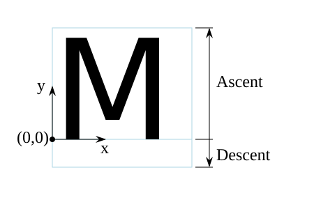
An 'M' inside an Em box (blue square). The 'M' sits on the baseline (blue line). The origin of the coordinate system is shown by the small black circle.
SVG assumes that the font tables will provide at least three font characteristics: an ascent, a descent and a set of baseline-tables. The ascent is the distance to the top of the EM box from the (0,0) point of the font; the descent is the distance to the bottom of the EM box from the (0.0) point of the font. The baseline-table is explained below.
Within an OpenType font ([OPENTYPE]), for horizontal writing-modes, the ascent and descent are given by the sTypoAscender and sTypoDescender entries in the OS/2 table. For vertical writing-modes, the descent (the distance, in this case from the (0,0) point to the left edge of the glyph) is normally zero because the (0,0) point is on the left edge. The ascent for vertical writing-modes is either 1 em or is specified by the ideographic top baseline value in the OpenType Base table for vertical writing-modes.
Glyphs are positioned relative to a particular point on each glyph known as the alignment point. For horizontal writing-modes, the glyphs' alignment points are vertically aligned while for vertical writing-modes, they are horizontally aligned. The position of the alignment point depends on the script. For example, Western glyphs are aligned at the bottom of capital letters, northern Indic glyphs are aligned at the top of a horizontal stroke near the top of the glyphs, and far-eastern glyphs are aligned either at the bottom or center of the glyph.
Within a script and within a line of text having a single font-size, the sequence of alignment points defines, in the inline-base direction, a geometric line called a baseline. Western and most other alphabetic and syllabic glyphs are aligned to an "alphabetic" baseline, the northern Indic glyphs are aligned to a "hanging" baseline and the far-eastern glyphs are aligned to an "ideographic" baseline.
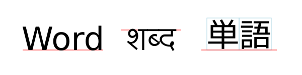
Example baselines (red lines) in three different scripts. From left to right: alphabetic, hanging, ideographic. The EM box is shown in blue for the ideographic script.
As glyphs are sequentially placed along a baseline, the alignment point of a glyph is typically positioned at the current text position (some properties such as vertical-align may alter the positioning). After each glyph is placed, the current text position is advanced by the glyph’s advance value (typically the width for horizontal text or height for vertical text) with any correction for kerning or other spacing adjustment as well as for new lines in pre-formatted or auto-wrapped text. The initial and final current text positions are used for alignment (e.g. when the text-anchor value is either 'middle' or 'end'). The glyph’s advance is needed when placing text along a path.
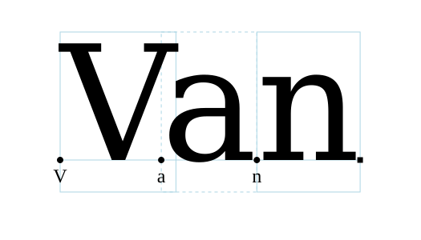
Example of font metrics. The blue boxes show the geometric boxes for the three glyphs. The labeled small circles show the current text position before glyph placement. The small square shows the final current text position after placing the last glyph. Note that the left side of the 'a' glyph’s box is not aligned with the right side of the 'V' glyph’s box due to kerning.
If a glyph does not provide explicit advance values corresponding to the current glyph orientation, then an appropriate approximation should be used. For vertical text, a suggested approximation is the em size.
The initial current text position is established by the
‘x’ and ‘y’ attributes on the
‘text’ element or first rendered ‘tspan’ element for
pre-formatted text, or auto-wrapped text when the content area is determined by the inline-size property. For
other auto-wrapped text, the initial current text position
is determined by the position of the first rendered glyph after
applying the CSS line wrapping algorithm.
If no ‘x’ (‘y’) attribute establishes the
initial current text position, then its X (Y) coordinate is
0 in the current user coordinate
system.
A baseline-table specifies the position of one or more baselines in the design space coordinate system. The function of the baseline table is to facilitate the alignment of different scripts with respect to each other when they are mixed on the same text line. Because the desired relative alignments may depend on which script is dominant in a line (or block), there may be a different baseline table for each script. In addition, different alignment positions are needed for horizontal and vertical writing modes. Therefore, the font may have a set of baseline tables: typically, one or more for horizontal writing-modes and zero or more for vertical writing-modes.
Some fonts may not have values for the baseline tables. Heuristics are suggested for approximating the baseline tables in CSS Inline Layout Module Level 3 [css-inline-3] when a given font does not supply baseline tables.
When a different font (or change in font size) is specified in the middle of a run of text, the dominant baseline determines the baseline used to align glyphs in the new font (new size) to those in the previous font. The dominant-baseline property is used to set the dominant baseline.
Alignment between an object relative to its parent is determined by the alignment baseline. It is normally the same baseline as the dominant baseline but by using the shorthand vertical-align property (preferred) or the longhand alignment-baseline another baseline can be chosen.
The dominant baseline can be temporarily shifted (as needed for superscripts or subscripts) by using either the shorthand vertical-align property (preferred) or the longhand baseline-shift property. Note that shifts can be nested, each shift added to the previous shift.
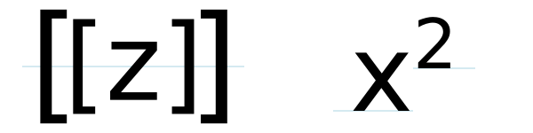
Examples of using the 'vertical-align' property.
Left: 'vertical-align:mathematical'
('alignment-baseline:mathematical') is applied to
the ‘tspan’ containing '[z]'. The light-blue line shows
the position of the mathematical baseline.
Right: 'vertical-align:super' ('baseline-shift:super') applied
to the ‘tspan’ containing '2'. The light-blue lines
indicate the shift in baseline.
SVG further assumes that for each glyph in the font data for a font, there are two width values, two alignment-baselines and two alignment points, one each for horizontal writing-modes and the other for vertical writing-modes. (Even though it is specified as a width, for vertical writing-modes the width is used in the vertical direction.) The inline-base direction position of the alignment point is on the start-edge of the glyph.
Additional information on baselines can be found in the CSS Inline Layout Module Level 3 specification. [css-inline-3] (Also see: CSS Writing Modes Level 3 specification. [css-writing-modes-3])
| SVG 2 Requirement: | Support text aligned to different baselines. |
|---|---|
| Resolution: | SVG 2 will support glyphs being aligned to different baselines, perhaps by using existing or improved CSS properties. |
| Purpose: | To allow glyphs in horizontal text to have different vertical alignments for stylistic effects. |
| Owner: | Chris (no action) |
| Status: | Done |
A single line of text is laid out inside a line box. Multi-line text is produced by stacking these boxes. The height of a line box is determined by finding the maximum ascent and the maximum descent of all the glyphs in a line of text after applying the effect of the line-height property. The width of a line box is normally the width of the containing text block. In SVG, when the containing text block does not have a fixed geometry (as with pre-formatted text), the line box tightly wraps the glyph boxes within the box.
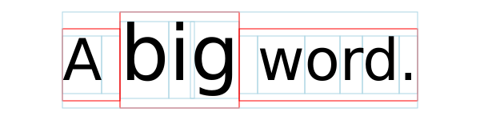
Example of determining the height of a line box. First each glyph box (small light-blue boxes) is extended vertically above and below according to the line-height property. In this case the line-height property is 125%. The larger glyphs have a font-size of 96px so their extra height is 24px (25% of 96px). The extra height is evenly divided above and below resulting in the red boxes. (For clarity, all glyphs in the same inline element have been grouped together). The final line box (large light-blue box) is then found using the maximum extents of the red boxes above and below the baseline.
In order to support various international writing systems, line boxes may be orientated in a horizontal or vertical direction. Text within a vertical line box flows from top to bottom. Text within a horizontal line box may flow left-to-right (e.g., modern Latin scripts), right-to-left (e.g., Hebrew or Arabic), or a mixture of left-to-right and right-to-left (bidirectional text).
The processing model for bidirectional text is as follows:
- The user agent processes the characters which are provided in logical order (i.e., the order the characters appear in the original document).
- The user agent excludes non-rendered elements and collapses white space.
-
The user agent determines
the set of independent blocks within each of which it should apply
the Unicode bidirectional algorithm.
- Each text chunk represents an independent block of text.
- Any change in glyph orientation due to processing of the text-orientation or obsoleted glyph-orientation-vertical properties will start a new independent blocks of text for bi-directional purposes.
-
After processing the Unicode bidirectional
algorithm and properties direction and
unicode-bidi on each of the independent text blocks, the
user agent will have a potentially re-ordered list of characters
which are now in left-to-right rendering order. Simultaneous with
re-ordering of the characters, the ‘
dx’, ‘dy’, and ‘rotate’ attributes on the ‘text’ and ‘tspan’ elements are also re-ordered to maintain the original correspondence between characters and attribute values.
While kerning or ligature processing might be font-specific, the preferred model is that kerning and ligature processing occurs between combinations of characters or glyphs after the characters have been re-ordered.
The orientation of line boxes as well as the direction in which they are stacked (block-flow direction) is determined by the writing-mode property. For horizontal text (writing-mode value horizontal-tb) line boxes are stacked from top to bottom. For vertical text, line boxes are stacked from right-to-left (writing-mode value vertical-rl) or left-to-right (writing-mode value vertical-lr).
11.2. The ‘text’ and ‘tspan’ elements
The ‘text’ element defines a graphics element consisting of
text. The ‘tspan’ element within a ‘text’ or another
‘tspan’ element, allows one to switch the style and/or
adjust the position of the rendered text inside the ‘tspan’
element relative to the parent element.
The character data within the ‘text’ and ‘tspan’
elements, along with relevant attributes and properties, and
character-to-glyph mapping tables within the font itself, define
the glyphs to be rendered. The attributes and properties on
the ‘text’ and ‘tspan’ elements indicate such things
as the writing direction, font specification, and painting
attributes which describe how exactly to render the
characters. Subsequent sections of this chapter describe the
relevant text-specific attributes and properties.
Since ‘text’ and ‘tspan’ elements are rendered using
the same rendering methods as other graphics elements, all of the
same
painting features that apply to
shapes such as paths and
rectangles also apply to
‘text’ and ‘tspan’ elements,
except for markers.
In addition,
coordinate system transformations,
clipping, and
masking can be applied
to the ‘text’ element as a whole.
In CSS terms, the ‘text’ element acts as a block
element. The ‘tspan’, ‘textPath’, and ‘a’
elements that are descended from text content elements act as
inline elements.
It is possible to apply a gradient, pattern, clipping path, mask
or filter to text. When one of these facilities is applied to text
and keyword 'objectBoundingBox' is
used (see
Object bounding box
units) to specify a graphical effect relative to the "object
bounding box", then the object bounding box units are computed
relative to the entire ‘text’ element in all cases, even
when different effects are applied to different ‘tspan’ or ‘textPath’
elements within the same ‘text’ element.
The ‘text’ element renders its first glyph (after
bidirectionality
reordering) at the initial current text position (with
possible adjustments due to the value of the
text-anchor property or the text-align property).
For pre-formatted text and for auto-wrapped text where the
content area is determined by the inline-size
property, the initial current text position is determined by the ‘x’ and
‘y’ values of the ‘text’ or ‘tspan’
element which contains the first rendered character.
For auto-wrapped text in a shape or text on a path see
the Auto-wrapped text or
Text on a path sections,
respectively, to determine the initial current text position.
After the glyph(s) corresponding to the given character is (are)
rendered, the current text position is updated for the next
character. In the simplest case, the new current text position is
the previous current text position plus the glyphs' advance value
(horizontal or vertical). See
text layout for a description
of glyph placement and glyph advance.
The text string Hello, out there!
is rendered onto the
canvas using the Verdana font family with the glyphs filled
with the color blue.
<?xml version="1.0" standalone="no"?>
<svg width="10cm" height="3cm" viewBox="0 0 1000 300"
xmlns="http://www.w3.org/2000/svg" version="1.1">
<text x="250" y="180"
font-family="Verdana" font-size="64" fill="blue" >
Hello, out there!
</text>
</svg>
A ‘tspan’ is used to change the styling of the word not
.
<?xml version="1.0" standalone="no"?>
<svg width="10cm" height="3cm" viewBox="0 0 1000 300"
xmlns="http://www.w3.org/2000/svg" version="1.1">
<g font-family="Verdana" font-size="64" >
<text x="160" y="180" fill="blue" >
You are
<tspan font-weight="bold" fill="red" >not</tspan>
a banana.
</text>
</g>
</svg>
Two ‘tspan’ elements are repositioned horizontally and
vertically using the ‘x’ and ‘y’
attributes. Because all the text is within a single
‘text’ element, a user will be able to select through all
the text and copy it to the system clipboard in user agents that
support text selection and
clipboard operations.
<?xml version="1.0" standalone="no"?>
<svg width="10cm" height="3cm" viewBox="0 0 1000 300"
xmlns="http://www.w3.org/2000/svg" version="1.1">
<g font-family="Verdana" font-size="64" >
<text x="100" y="180" fill="blue" >
But you
<tspan dx="2em" dy="-50" font-weight="bold" fill="red" >
are
</tspan>
<tspan dy="100">
a peach!
</tspan>
</text>
</g>
</svg>
text’- Categories:
- Graphics element, renderable element, text content element
- Content model:
-
Any number of the following elements or character data, in any order:
a, clipPath,marker, mask,script,style - Attributes:
- DOM Interfaces:
| SVG 2 Requirement: | Allow transforms on ‘tspan’.
|
|---|---|
| Resolution: | SVG 2 will allow transforms on ‘tspan’. |
| Purpose: | Align with other elements such as ‘a’ which already allow transforms.
|
| Owner: | Cameron (no action) |
| Status: | Done |
This decision was reversed. See
GitHub Issue
210. CSS/HTML does not allow transforms on inline elements
and no renderer supports transforms on the ‘a’ element
when inline (in both SVG and HTML).
tspan’- Categories:
- Graphics element, renderable element, text content element, text content child element
- Content model:
-
Any number of the following elements or character data, in any order:
a, animate,script, set,style,tspan - Attributes:
- DOM Interfaces:
11.2.1. Attributes
-
Name Value Initial value Animatable x,y[ [ <length-percentage> | <number> ]+ ]# (none) yes -
If a single <length> is provided, then the value represents the new absolute X (Y) coordinate for the current text position for rendering the glyphs that correspond to the first character within this element or any of its descendants.
If a comma- or space-separated list of n <length>s is provided, then the values represent new absolute X (Y) coordinates for the current text position for rendering the glyphs corresponding to each of the first n addressable characters within this element or any of its descendants.
If more <length>s are provided than characters, then the extra <length>s will have no effect on glyph positioning.
If more characters exist than <length>s, or if the attribute is not specified, then for each additional character:
- if an ancestor ‘
text’ or ‘tspan’ element specifies an absolute X (Y) coordinate for the given character via an ‘x’ (‘y’) attribute (nearest ancestor has precedence), then that absolute X (Y) coordinate is used as the starting X (Y) coordinate for that character, else -
the starting X (Y) coordinate for rendering the glyphs
corresponding to the given character is the X (Y) coordinate
of the resulting current text position from the most
recently rendered glyph for the current ‘
text’ element, or the X (Y) coordinate of the initial current text position if no glyph has yet been rendered for that element.
In SVG 2, the ‘
text’ and ‘tspan’ ‘x’ and ‘y’ attributes are not presentation attributes and cannot be set via CSS. This may change in a future version of SVG. - if an ancestor ‘
-
Name Value Initial value Animatable dx,dy[ [ <length-percentage> | <number> ]+ ]# (none) yes -
If a single <length> is provided, this value represents the new relative X (Y) coordinate for the current text position for rendering the glyphs corresponding to the first character within this element or any of its descendants. The current text position is shifted along the x-axis (y-axis) of the current user coordinate system by <length> before the first character’s glyphs are rendered.
If a comma- or space-separated list of n <length>s is provided, then the values represent incremental shifts along the x-axis (y-axis) for the current text position before rendering the glyphs corresponding to the first n addressable characters within this element or any of its descendants. Thus, before the glyphs are rendered corresponding to each character, the current text position resulting from drawing the glyphs for the previous character within the current ‘
text’ element is shifted along the x-axis (y-axis) of the current user coordinate system by <length>.If more <length>s are provided than characters, then any extra <length>s will have no effect on glyph positioning.
If more characters exist than <length>s, or if the attribute is not specified, then for each additional character:
-
if an ancestor ‘
text’ or ‘tspan’ element specifies a relative X (Y) coordinate for the given character via a ‘dx’ (‘dy’) attribute (nearest ancestor has precedence), then the current text position is shifted along the x-axis (y-axis) of the current user coordinate system by that amount, else - no extra shift along the x-axis (y-axis) occurs.
-
if an ancestor ‘
-
Name Value Initial value Animatable rotate[ <number>+ ]# (none) yes (non-additive). -
The supplemental rotation, in degrees, about the current text position that will be applied to all of the glyphs corresponding to each character within this element.
If a comma- or space-separated list of <number>s is provided, then the first <number> represents the supplemental rotation for the glyphs corresponding to the first character within this element or any of its descendants, the second <number> represents the supplemental rotation for the glyphs that correspond to the second character, and so on.
If more <number>s are provided than there are characters, then the extra <number>s will be ignored.
If more characters are provided than <number>s, then for each of these extra characters the rotation value specified by the last number must be used.
If the attribute is not specified and if an ancestor of a ‘
tspan’ element specifies a supplemental rotation for a given character via a ‘rotate’ attribute (nearest ancestor has precedence), then the given supplemental rotation is applied to the given character. If there are more characters than <number>s specified in the ancestor’s ‘rotate’ attribute, then for each of these extra characters the rotation value specified by the last number must be used.This supplemental rotation has no impact on the rules by which current text position is modified as glyphs get rendered and is supplemental to any rotation due to text on a path and to text-orientation, glyph-orientation-horizontal, or glyph-orientation-vertical.
-
Name Value Initial value Animatable textLength<length-percentage> | <number> See below yes -
The author’s computation of the total sum of all of the advance values that correspond to character data within this element, including the advance value on the glyph (horizontal or vertical), the effect of properties letter-spacing and word-spacing and adjustments due to attributes ‘
dx’ and ‘dy’ on this ‘text’ or ‘tspan’ element or any descendants. This value is used to calibrate the user agent’s own calculations with that of the author.The purpose of this attribute is to allow the author to achieve exact alignment, in visual rendering order after any bidirectional reordering, for the first and last rendered glyphs that correspond to this element; thus, for the last rendered character (in visual rendering order after any bidirectional reordering), any supplemental inter-character spacing beyond normal glyph advances are ignored (in most cases) when the user agent determines the appropriate amount to expand/compress the text string to fit within a length of ‘
textLength’.If attribute ‘
textLength’ is specified on a given element and also specified on an ancestor, the adjustments on all character data within this element are controlled by the value of ‘textLength’ on this element exclusively, with the possible side-effect that the adjustment ratio for the contents of this element might be different than the adjustment ratio used for other content that shares the same ancestor. The user agent must assume that the total advance values for the other content within that ancestor is the difference between the advance value on that ancestor and the advance value for this element.This attribute is not intended for use to obtain effects such as shrinking or expanding text.
A negative value is an error (see Error processing).
The ‘
textLength’ attribute is only applied when the wrapping area is not defined by the inline-size property. It is also not applied for any ‘text’ or ‘tspan’ element that has forced line breaks (due to a white-space value of pre or pre-line).If the attribute is not specified anywhere within a ‘
text’ element, the effect is as if the author’s computation exactly matched the value calculated by the user agent; thus, no advance adjustments are made. For the purpose of reflecting the attribute in the DOM, the initial value is the current user-agent calculated length, expressed in implicit user units. -
Name Value Initial value Animatable lengthAdjustspacing | spacingAndGlyphs spacing yes -
- spacing
- Indicates that only the advance values are adjusted. The glyphs themselves are not stretched or compressed.
- spacingAndGlyphs
- Indicates that the advance values are adjusted and the glyphs themselves stretched or compressed in one axis (i.e., a direction parallel to the inline-base direction).
The user agent is required to achieve correct start and end positions for the text strings, but the locations of intermediate glyphs are not predictable because user agents might employ advanced algorithms to stretch or compress text strings in order to balance correct start and end positioning with optimal typography.
Note that, for a text string that contains n characters, the adjustments to the advance values often occur only for n−1 characters (see description of attribute ‘
textLength’), whereas stretching or compressing of the glyphs will be applied to all n characters.
11.2.2. Notes on 'x', 'y', 'dx', 'dy' and 'rotate'
The ‘x’, ‘y’, ‘dx’, ‘dy’, and
‘rotate’ on the ‘text’ and ‘tspan’ elements
are useful in
high-end typography scenarios where individual glyphs require
exact placement. These attributes are useful for minor positioning
adjustments between characters or for major positioning
adjustments, such as moving a section of text to a new location to
achieve the visual effect of a new line of text (compatible with
SVG 1.1). Note that the ‘x’, ‘y’, ‘dx’,
‘dy’, and ‘rotate’ attributes are
ignored for auto-wrapped text (except for the initial current text position when the content area is specified by
the inline-size property).
It was decided at the 2015 Sydney F2F that 'dx', 'dy', and 'rotate' would be ignored for auto-wrapped text. (Technically, it is not difficult to apply them but it was not seen as being really useful.)
In situations where micro-level positioning adjustment are
necessary for advanced typographic control, the SVG content
designer needs to ensure that the necessary font will be available
for all viewers of the document (e.g., package up the necessary
font data in the form of an SVG font or an alternative WebFont
format which is stored at the same Web site as the SVG content)
and that the viewing software will process the font in the
expected way (the capabilities, characteristics and font layout
mechanisms vary greatly from system to system). If the SVG content
contains ‘x’, ‘y’, ‘dx’, or
‘dy’ attribute values which are meant to correspond to a
particular font processed by a particular set of viewing software
and either of these requirements is not met, then the text might
display with poor quality.
The following additional rules apply to attributes ‘x’,
‘y’, ‘dx’, ‘dy’, and ‘rotate’ when they
contain a list of numbers:
-
When a single character maps to a single glyph – In this
case, the n-th value for the
‘
x’, ‘y’, ‘dx’, ‘dy’, and ‘rotate’ attributes is applied to the glyph that corresponds to the n-th character. -
When a single character maps to multiple glyphs (e.g., when
an accent glyph is placed on top of a base glyph) – In this
case, the n-th value for
the ‘
x’, ‘y’, ‘dx’, and ‘dy’ values are applied (i.e., the current text position is adjusted) before rendering the first glyph. The rotation transformation corresponding to the n-th ‘rotate’ value is applied to the glyphs and to the inter-glyph advance values corresponding to this character on a group basis (i.e., the rotation value creates a temporary new rotated coordinate system, and the glyphs corresponding to the character are rendered into this rotated coordinate system). -
When multiple characters map to a single glyph (e.g., when a
ligature is used) – Suppose that the
n-th and
(n+1)-th characters
map to a single glyph. In this case, the
n-th value for the
‘
x’, ‘y’, ‘dx’, ‘dy’, and ‘rotate’ attributes all apply when rendering the glyph. The (n+1)-th values, however, for ‘x’, ‘y’, and ‘rotate’ are ignored (exception: the final ‘rotate’ value in the list would still apply to subsequent characters), whereas the ‘dx’ and ‘dy’ are applied to the subsequent character (i.e., the (n+2)-th character), if one exists, by translating the current text position by the given amounts before rendering the first glyph associated with that character. -
When there is a many-to-many mapping of characters to
glyphs (e.g., when three characters map to two glyphs, such as
when the first glyph expresses the first character and half
of the second character, and the second glyph expresses the
other half of the second character plus the third character)
– Suppose that the n-th,
(n+1)-th and
(n+2)-th characters map
to two glyphs. In this case, the
n-th value for the
‘
x’, ‘y’, ‘dx’, and ‘dy’ values are applied (i.e., the current text position is adjusted) before rendering the first glyph. The rotation transformation corresponding to the n-th ‘rotate’ value is applied to both the two glyphs and the glyph advance values for the first glyph on a group basis (i.e., the rotation value creates a temporary new rotated coordinate system, and the two glyphs are rendered into the temporary rotated coordinate system). The (n+1)-th and (n+2)-th values, however, for the ‘x’, ‘y’, and ‘rotate’ attributes are not applied (exception: the final ‘rotate’ value in the list would still apply to subsequent characters), whereas the (n+1)-th and (n+2)-th values for the ‘dx’ and ‘dy’ attributes are applied to the subsequent character (i.e., the (n+3)-th character), if one exists, by translating the current text position by the given amounts before rendering the first glyph associated with that character. -
Relationship to bidirectionality –
Text is laid out in a two-step process, where any bidirectional
text is first re-ordered into a left-to-right string, and then
text layout occurs with the re-ordered text string. Whenever the
character data within a ‘
tspan’ element is re-ordered, the corresponding elements within the ‘x’, ‘y’, ‘dx’, ‘dy’, and ‘rotate’ are also re-ordered to maintain the correspondence. For example, suppose that there is the following ‘tspan’ element:and that the word "Hebrew" will be drawn right-to-left. First, the character data and the corresponding values in the ‘<tspan dx="11 12 13 14 15 0 21 22 23 0 31 32 33 34 35 36">Latin and Hebrew</tspan>dx’ list will be reordered, such that the text string will be "Latin and werbeH" and the list of values for the ‘dx’ attribute will be "11 12 13 14 15 0 21 22 23 0 36 35 34 33 32 31". After this re-ordering, the glyphs corresponding to the characters will be positioned using standard left-to-right layout rules.
Example tspan04 uses the
‘rotate’ attribute on the ‘tspan’ element to rotate the
glyphs to be rendered. This example shows a single text string in a
‘tspan’ element that contains more characters than the
number of values specified in the ‘rotate’ attribute. In
this case the last value specified in the ‘rotate’
attribute of the ‘tspan’ must be applied to the remaining
characters in the string.
<?xml version="1.0" standalone="no"?>
<svg width="10cm" height="3cm" viewBox="0 0 1000 300"
xmlns="http://www.w3.org/2000/svg" version="1.1">
<desc>
Example tspan04 - The number of rotate values is less than the number of
characters in the string.
</desc>
<text font-family="Verdana" font-size="55" fill="blue" >
<tspan x="250" y="150" rotate="-30,0,30">
Hello, out there
</tspan>
</text>
<!-- Show outline of viewport using 'rect' element -->
<rect x="1" y="1" width="998" height="298"
fill="none" stroke="blue" stroke-width="2" />
</svg>
Example tspan04

Example tspan05 specifies the
‘rotate’ attribute on the ‘text’ element and on all
but one of the child ‘tspan’ elements to rotate the glyphs
to be rendered. The example demonstrates the propagation of the
‘rotate’ attribute.
<?xml version="1.0" standalone="no"?>
<svg width="100%" height="100%" viewBox="0 0 500 120"
xmlns="http://www.w3.org/2000/svg" version="1.1">
<desc>
Example tspan05 - propagation of rotation values to nested tspan elements.
</desc>
<text id="parent" font-family="Arial, sans-serif" font-size="32" fill="red" x="40" y="40"
rotate="5,15,25,35,45,55">
Not
<tspan id="child1" rotate="-10,-20,-30,-40" fill="orange">
all characters
<tspan id="child2" rotate="70,60,50,40,30,20,10" fill="yellow">
in
<tspan id="child3">
the
</tspan>
</tspan>
<tspan id="child4" fill="orange" x="40" y="90">
text
</tspan>
have a
</tspan>
<tspan id="child5" rotate="-10" fill="blue">
specified
</tspan>
rotation
</text>
<!-- Show outline of viewport using 'rect' element -->
<rect x="1" y="1" width="498" height="118" fill="none"
stroke="blue" stroke-width="2" />
</svg>
Example tspan05

Rotation of red text inside the ‘text’ element:
-
The ‘
rotate’ value will rotate the characters in the text "Not " by 5, 15, 25 and 35 degrees respectively. -
A ‘
rotate’ value is applied to the space that follows the text "Not", to the space in between the text in the "child1" and "child5" ‘tspan’ elements, and to the space before the text "rotation". -
The next current ‘
rotate’ value specified is 45 followed by 55. The current ‘rotate’ value in the ‘text’ element is incremented as subsequent characters in the text of the child ‘tspan’ elements are processed. -
The next immediate ‘
tspan’ element specifies rotate values for the text, hence the current ‘rotate’ value will change to the next value in the list (but is not used) as each character is processed until the last value of 55 degrees is reached. -
The last ‘
rotate’ value of 55 degrees will be applied to all the characters in the text "rotation".
Rotation of the orange text inside the "child1" ‘tspan’ element:
-
The ‘
rotate’ value will rotate the first 4 characters in the text "all characters " by -10, -20, -30 and -40 respectively. -
The last ‘
rotate’ value of -40 becomes the current ‘rotate’ value and will be applied to all subsequent characters in the ‘tspan’ element and to any child ‘tspan’ elements that do not specify ‘rotate’ values. -
The "child4" ‘
tspan’ element does not specify any ‘rotate’ values and thus uses the current ‘rotate’ of its ancestor ("child1" ‘tspan’ element). All the characters in the text "text" specified within the "child4" ‘tspan’ element will be rotated by -40 degrees. -
The last ‘
rotate’ value of -40 degrees will be applied to all the characters in the text "have a". -
A ‘
rotate’ value is applied to the space in between the text in the "child2" and "child4" ‘tspan’ elements, and to the space before the text "have a".
Rotation of the yellow text inside the "child2" ‘tspan’ element:
-
The ‘
rotate’ value will rotate the characters in the (yellow) text "in " by 70, 60, and 50 degrees respectively. -
A ‘
rotate’ value is applied to the space that follows the text "in". -
There are more ‘
rotate’ values specified than characters, thus the additional ‘rotate’ values will be applied to the "child3" ‘tspan’ element which does not specified any ‘rotate’ values. -
The characters in the text "the" specified within the
"child3" ‘
tspan’ element will be rotated 40, 30 and 20 degrees respectively.
Rotation of the blue text inside the "child5" ‘tspan’ element:
-
The ‘
rotate’ value will rotate all the characters in text "specified" by -10 degrees. -
Only one ‘
rotate’ value is specified and is thus applied to all characters in the ‘tspan’ element.
The following diagram illustrates how the rotation values propagate to
‘tspan’ elements nested withing a ‘text’ element:
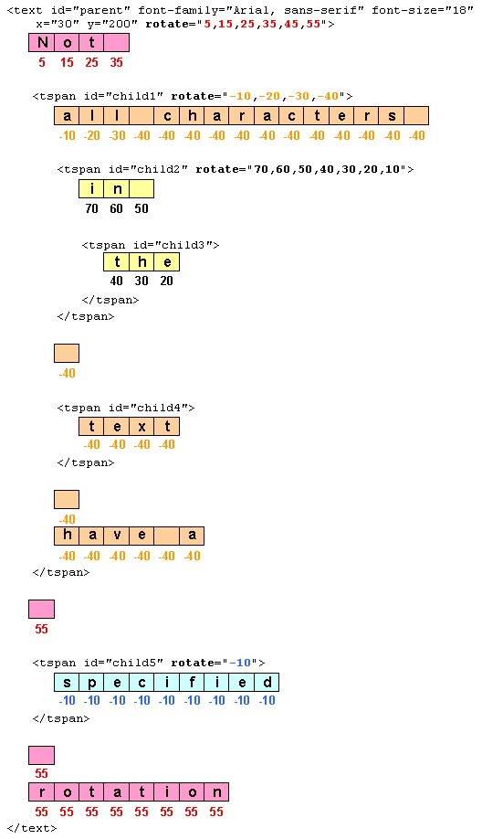
11.3. Text layout – Introduction
| SVG 2 Requirement: | Include text layout improvements from SVG Tiny 1.2. |
|---|---|
| Resolution: | SVG 2 will include the improved text from SVG Tiny 1.2 on characters and glyphs, text layout, text selection, text search. |
| Purpose: | To include clearer descriptions of text layout; no functional change. |
| Owner: | Chris (ACTION-3236) |
| SVG 2 Requirement: | Support text in shapes. |
|---|---|
| Resolution: | SVG 2 will require automatic text wrapping compatible with CSS. |
| Purpose: | Text in flow charts, etc. |
| Owner: | Tav (no action) |
This section gives a short overview of SVG text layout. It is followed by sections that cover different aspects of text layout in more detail.
Text layout in SVG is a multi-stage process that takes as input
a ‘text’ element subtree and its property values and
produces a sequence of glyphs to render and their positions in
each text content element’s coordinate system.
First, a ‘text’ element and its descendants are laid out
inside a content area or wrapping area according to
CSS, as if the ‘text’ were a block element and any
‘tspan’, ‘textPath’, and ‘a’ descendants were
inline elements. This layout takes into account all paragraph
level and font related CSS properties described in this chapter.
The content area may be explicitly declared by setting the inline-size property. If a content area is not declared, it defaults to a rectangle of infinite width and height.
Second, any positioning given by ‘x’, ‘y’,
‘dx’ and ‘dy’ attributes are applied to
the resulting glyph positions from the CSS layout process.
The rules for which transforms are allowed depend on if
the content area was explicitly declared or not. If not
explicitly declared, the rules define the layout of
pre-formatted text. If declared, the rules define the
layout of auto-wrapped text.
Third, the effect of the text-anchor property is applied if necessary.
Finally, layout of glyphs for any ‘textPath’ elements is
performed, converting pre-formatted text
to text-on-a-path.
Examples of the different types of text layout:
- Pre-formatted:
-
For short strings of text (e.g. labels) or where exact
placement of glyphs is required (e.g. hand-kerned titles).
An example of multi-line pre-formatted text.
<svg xmlns="http://www.w3.org/2000/svg" width="300" height="100" viewBox="0 0 300 100"> <text x="20" y="45" style="font: 24px sans-serif;"> Example of multi-line, <tspan x="20" y="75">pre-formatted text.</tspan> </text> </svg>Pre-formatted text where a ‘
tspan’ element has been used to create multi-line text. - Wrapped text:
-
For long strings of text where automatic text wrapping is
required.
An example of auto-wrapped text.
<svg xmlns="http://www.w3.org/2000/svg" width="300" height="100" viewBox="0 0 300 100"> <text x="20" y="45" style="font: 24px sans-serif; inline-size: 250px;"> Example of text auto-wrapped.</text> </svg>Auto-wrapped text. The inline-size property defines a rectangular content area of infinite height (shown in light blue).
- Text on path:
-
For text that follows a specified path.
An example of text on a path.
<svg xmlns="http://www.w3.org/2000/svg" width="300" height="100" viewBox="0 0 300 100"> <path id="MyPath" stroke="lightblue" fill="none" d="M 50,50 C 100,0 200,100 250,50"/> <text style="font: 24px sans-serif;"> <textPath href="#MyPath">Text on a path.</textPath> </text> </svg>
SVG 2 introduces the ability to automatically wrap text inside a
rectangle or other shape by specifying a content area. The
design of SVG wrapped text is motivated by the desire that SVG
text wrapping be as compatible as possible with text wrapping in
CSS in order that renderers that support CSS text wrapping can
implement SVG text wrapping easily (but without requiring non-HTML
compatible SVG renderers to implement HTML). There are several
differences between SVG and CSS text wrapping. The most important
is that in SVG, a content area must be explicitly provided
as SVG does not have an automatic finite (or semi-finite)
content area (provided in CSS by the box model). Another
difference is that SVG does not have the <p></p> and
<br/> elements which create line breaks. Instead, SVG relies
on the pre and
pre-line values of
white-space to provide line breaks. SVG wrapped text also
allows a content-creation tool to provide a natural fallback for
SVG 1.1 renderers that do not support wrapped text (by use of
‘x’ and ‘y’ attributes in the ‘text’ and
‘tspan’ elements, which are ignored by SVG 2 renderers for
auto-wrapped text).
SVG’s text layout options are designed to cover most general use
cases. If more complex layout is required (bulleted lists, tables,
etc.), text can be rendered in another XML namespace such as XHTML
[HTML] embedded inline within a
‘foreignObject’ element.
11.4. Text layout – Content Area
A content area is defined by specifying in
a ‘text’ element an inline-size property.
If no content area is
provided, the content area defaults to a rectangle of
infinite width and height (see the
pre-formatted text section).
Wrapped text is laid out in a wrapping area. The wrapping area is the same as the content area.
Once a wrapping area is defined, the text is laid out inside the wrapping area according to the rules of CSS (respecting any special rules given in this section).
11.4.1. The ‘inline-size’ property
'extent' added by resolution from February 12th, 2015. 'extent' replaces the 'width' and 'height' attributes, added by resolution from June 27th, 2013. Replaced by 'inline-size' presentation attribute per resolution from Linkoping F2F, June 11, 2015.
The inline-size property allows one to set the wrapping area to a rectangular shape. The computed value of the property sets the width of the rectangle for horizontal text and the height of the rectangle for vertical text. The other dimension (height for horizontal text, width for vertical text) is of infinite length. A value of zero disables the creation of a wrapping area.
The initial current text position is taken from the
‘x’ and ‘y’ attributes of the
‘text’ element (or first child ‘tspan’ element
if the attributes are not given on the ‘text’ element).
For left-to-right text, the initial current text position
is at the left of the rectangle. For right-to-left text it is at
the right of the rectangle.
For vertical text, the initial current text position is at
the top of the rectangle.
The rectangle (wrapping area) is then anchored according to the text-anchor property using the edges of the wrapping area to determine the start, middle, and end positions.
The inline-size property method to wrap text is an
extension to pre-formatted SVG text where the author simply gives
a limit to the width or height of the block of text; thus the use
of the ‘x’ and ‘y’ attributes along with
the direction and text-anchor properties to
position the first line of text.
| Name: | inline-size |
|---|---|
| Value: | auto | <length-percentage> |
| Initial: | auto |
| Applies to: | ‘text’ elements
|
| Inherited: | no |
| Percentages: | Refer to the width (for horizontal text) or height (for vertical text) of the current SVG viewport (see Units) |
| Media: | visual |
| Computed value: | an absolute length or percentage |
| Animation type: | by computed value |
An example of using inline-size for wrapping horizontal text.
<svg xmlns="http://www.w3.org/2000/svg"
width="300" height="100" viewBox="0 0 300 100">
<text x="50" y="30" style="font: 20px sans-serif; inline-size: 200px">
This text wraps at 200 pixels.
</text>
</svg>
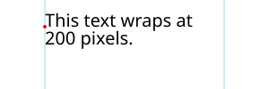
Horizontal text wrapping. The light-blue lines indicate the limits of the content area. Note that the content area is of infinite height. The red dot shows the initial current text position.
An example of using inline-size for wrapping right to left horizontal text.
<svg xmlns="http://www.w3.org/2000/svg"
width="300" height="100" viewBox="0 0 300 100">
<text x="250" y="30"
style="font: 20px PakType Naqsh; inline-size: 200px; direction: rtl;">
هذا النص يلتف في 200 بكسل.</text>
</svg>
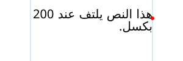
Horizontal text wrapping for right to left text. The light-blue lines indicate the limits of the content area. Note that the content area is of infinite height. The red dot shows the initial current text position.
Some browser may not render this SVG 1.1 figure correctly. Batik and Firefox seems to get it right. Bug filed against Chrome.
An example of using inline-size for wrapping vertical text.
<svg xmlns="http://www.w3.org/2000/svg"
width="100" height="300" viewBox="0 0 100 300">
<text x="62.5" y="25" inline-size="200"
style="font: 25px IPAMincho; inline-size: 200px; writing-mode: vertical-rl;">
テキストは１０文字後に折り返されます。</text>
</svg>
Vertical text wrapping. The light-blue lines indicate the limits of the content area. Note that the content area is of infinite width. The red dot shows the initial current text position.
This SVG 1.1 image doesn’t work in Firefox, even nightly. Firefox does not support the presentation attribute 'writing-mode'. Bug filed against Firefox.
An example of using inline-size for wrapping horizontal text, anchored in the middle.
<svg xmlns="http://www.w3.org/2000/svg"
width="300" height="100" viewBox="0 0 300 100">
<text x="50" y="30" style="font: 20px sans-serif; inline-size: 200px; text-anchor: middle">
This text wraps at 200 pixels.
</text>
</svg>
Horizontal text wrapping. The light-blue lines indicate the limits of the content area. The text is anchored in the middle. The red dot shows the initial current text position.
11.5. Text layout – Algorithm
Text layout begins by passing to a CSS-based text renderer the
content of the ‘text’ element which includes text data
along with styling information and a description of one or more
shapes to be filled. The ‘text’ element is treated as a
block element and its descendant ‘tspan’, ‘textPath’
and ‘a’ elements are treated as inline elements. The CSS
renderer returns a set of typographic characters with
their positions resulting from laying out the text as if the text
were absolutely positioned.
A typographic character may contain more than one glyph. It is assumed here the relative positioning of the glyphs inside a typographic character is encapsulated by the typographic character and it is not user controllable.
Once a content area has been defined, the following
algorithm is used to determine the typographic characters
and their positions for a given ‘text’ element:
-
For text where the content area is defined by the
inline-size property, layout the text in a CSS content
box where the inline size is set to the value of
the inline-size property and the block size is
unconstrained.
This means that text is laid out with the box width set to the inline-size value if writing-mode is horizontal-tb, or with the box height set to the inline-size value otherwise.
- For all other text (SVG 1.1 compatible text and SVG 1.1 like multi-line text), layout the text in a CSS content box that is unconstrained in width and height.
A number of CSS properties have no or limited effect on SVG text layout:
-
The used value of each of the following properties on a text content element (and its pseudo-elements, if any) and on
an ‘
a’ element within a text content block element must be the property’s initial values: ‘border-style’, ‘float’, ‘margin’, ‘padding’, ‘position’ and ‘text-align’. -
If the computed value of the display property on a
correctly parented text content block element is anything
other than
none, then its used value must
be
block.
This ensures that the ‘
text’ element is treated as if it were a block element. -
If the computed value of the display property on a
correctly parented text content child element
or ‘
a’ element, is anything other than none, then its used value must be inline.This ensures that ‘
tspan’, ‘textPath’ and ‘a’ elements are treated as if they were inline elements. Note: the transform property has no effect on inline elements. -
The used value of the display property on an element
that is a descendant of a text content block element and
is not a correctly parented text content child element
or ‘
a’ element must be none.This ensures that graphics and metadata elements inside a ‘
text’ element do not render.
Various SVG attributes and properties may reposition the typographic characters depending on how the content area is defined:
- For text where the content area is defined by the inline-size property, each line box is shifted according to the text-anchor property. No further post-processing is performed.
- For all other text (SVG 1.1 compatible text and SVG 1.1 like multi-line text), the positions of the typographic characters are adjusted according to the algorithm that follows.
The following SVG text layout algorithm returns output information
about each character in the DOM in the ‘text’ element’s
subtree. That information includes:
-
a global index number, which indicates the index of the
character relative to the start of the ‘
text’ element; -
an (x, y) coordinate pair, which gives its position in the
coordinate space of the ‘
text’ element; - an angle value, which gives its rotation;
-
a "hidden" flag, which represents whether it is hidden due to
falling off the end of a ‘
textPath’; - an "addressable" flag, which represents whether it is an addressable character, that is, addressable by text positioning attributes and SVG DOM text methods;
- a "middle" flag, which represents whether it is the second or later character of a typographic character
- an "anchored chunk" flag, which represents whether it starts a contiguous sequence of glyphs that can be affected by text anchoring
The arrays given in the SVG attributes ‘x’,
‘y’, ‘dx’, ‘dy’,
and ‘rotate’ are indexed by addressable characters. However, repositioning is applied to
typographic characters. If a typographic character
corresponds to more than one character (e.g. a ligature), only
the array values corresponding to the first character are used
in positioning the typographic character. Array values
corresponding to other characters in the typographic character
are skipped (for ‘x’ and ‘y’), are
accumulated and applied to the next typographic character
(for ‘dx’ and ‘dy’), or if it is the last
value in the array, applied to the following typographic characters (for ‘rotate’). This ensures, for example,
that attribute values are applied to the same characters regardless of
whether or not a font has a particular ligature.
The SVG specific text layout algorithm is as follows:
-
Setup
-
Let root be the result of generating
typographic character positions for the
‘
text’ element and its subtree, laid out as if it were an absolutely positioned element.This will be a single line of text unless the white-space property causes line breaks.
-
Let count be the number of DOM characters
within the ‘
text’ element’s subtree. -
Let result be an array of length count
whose entries contain the per-character information described
above. Each entry is initialized as follows:
- its global index number equal to its position in the array,
- its "x" coordinate set to "unspecified",
- its "y" coordinate set to "unspecified",
- its "rotate" coordinate set to "unspecified",
- its "hidden" flag is false,
- its "addressable" flag is true,
- its "middle" flag is false,
- its "anchored chunk" flag is false.
- Let CSS_positions be an array of length count whose entries will be filled with the x and y positions of the corresponding typographic character in root. The array entries are initialized to (0, 0).
-
Let "horizontal" be a flag, true if the writing mode of ‘
text’ is horizontal, false otherwise.
-
Let root be the result of generating
typographic character positions for the
‘
-
Set flags and assign initial positions
For each array element with index i in result:
-
Set addressable to false if the character at index i was:
- part of the text content of a non-rendered element
- discarded during layout due to being a collapsed white space character, a soft hyphen character, or a bidi control character; or
- discarded during layout due to being a collapsed segment break; or
- trimmed from the start or end of a line.
Since there is collapsible white space not addressable by glyph positioning attributes in the following ‘
text’ element (with a standard font), the "B" glyph will be placed at x=300.<text x="100 200 300"> A B </text>This is because the white space before the "A", and all but one white space character between the "A" and "B", is collapsed away or trimmed.
- Set middle to true if the character at index i is the second or later character that corresponds to a typographic character.
-
If the character at index i corresponds to a typographic character at the beginning of a line, then set the "anchored
chunk" flag of result[i] to true.
This ensures chunks shifted by text-anchor do not span multiple lines.
- If addressable is true and middle is false then set CSS_positions[i] to the position of the corresponding typographic character as determined by the CSS renderer. Otherwise, if i > 0, then set CSS_positions[i] = CSS_positions[i − 1]
-
Set addressable to false if the character at index i was:
-
Resolve character positioning
Position adjustments (e.g. values in a ‘
x’ attribute) specified by a node apply to all characters in that node including characters in the node’s descendants. Adjustments specified in descendant nodes, however, override adjustments from ancestor nodes. This section resolves which adjustments are to be applied to which characters. It also directly sets the rotate coordinate of result.-
Set up:
- Let resolve_x, resolve_y, resolve_dx, and resolve_dy be arrays of length count whose entries are all initialized to "unspecified".
-
Set "in_text_path" flag false.
This flag will allow ‘
y’ (‘x’) attribute values to be ignored for horizontal (vertical) text inside ‘textPath’ elements. -
Call the following procedure with the ‘
text’ element node.
-
Procedure: resolve character
positioning:
A recursive procedure that takes as input a node and whose steps are as follows:
-
If node is a ‘
text’ or ‘tspan’ node:- Let index equal the "global index number" of the first character in the node.
- Let x, y, dx, dy and rotate be the lists of values from the corresponding attributes on node, or empty lists if the corresponding attribute was not specified or was invalid.
-
If "in_text_path" flag is false:
- Let new_chunk_count = max(length of x, length of y).
-
If the "horizontal" flag is true:
- Let new_chunk_count = length of x.
-
Else:
- Let new_chunk_count = length of y.
- Let length be the number of DOM characters in the subtree rooted at node.
-
Let i = 0 and j = 0.
i is an index of addressable characters in the node; j is an index of all characters in the node.
-
While j < length, do:
This loop applies the ‘
x’, ‘y’, ‘dx’, ‘dy’ and ‘rotate’ attributes to the content inside node.-
If the "addressable" flag of result[index +
j] is true, then:
-
If i < new_check_count, then
set the "anchored chunk" flag of
result[index + j] to
true. Else set the flag to false.
Setting the flag to false ensures that ‘
x’ and ‘y’ attributes set in a ‘text’ element don’t create anchored chunk in a ‘textPath’ element when they should not. - If i < length of x, then set resolve_x[index + j] to x[i].
-
If "in_text_path" flag is true and the "horizontal"
flag is false, unset
resolve_x[index].
The ‘
x’ attribute is ignored for vertical text on a path. - If i < length of y, then set resolve_y[index + j] to y[i].
-
If "in_text_path" flag is true and the "horizontal"
flag is true, unset
resolve_y[index].
The ‘
y’ attribute is ignored for horizontal text on a path. - If i < length of dx, then set resolve_dx[index + j] to dy[i].
- If i < length of dy, then set resolve_dy[index + j] to dy[i].
- If i < length of rotate, then set the angle value of result[index + j] to rotate[i]. Otherwise, if rotate is not empty, then set result[index + j] to result[index + j − 1].
- Set i = i + 1.
-
If i < new_check_count, then
set the "anchored chunk" flag of
result[index + j] to
true. Else set the flag to false.
- Set j = j + 1.
-
If the "addressable" flag of result[index +
j] is true, then:
-
If node is a ‘
textPath’ node:- Let index equal the global index number of the first character in the node (including descendant nodes).
-
Set the "anchored chunk" flag of result[index]
to true.
A ‘
textPath’ element always creates an anchored chunk. - Set in_text_path flag true.
-
For each child node child of node:
- Resolve glyph positioning of child.
-
If node is a ‘
textPath’ node:- Set "in_text_path" flag false.
-
If node is a ‘
-
Set up:
-
Adjust positions: dx, dy
The ‘
dx’ and ‘dy’ adjustments are applied before adjustments due to the ‘textLength’ attribute while the ‘x’, ‘y’ and ‘rotate’ adjustments are applied after.-
Let shift be the cumulative x and
y shifts due to ‘
dx’ and ‘dy’ attributes, initialized to (0,0). -
For each array element with index i in result:
- If resolve_dx[i] is unspecified, set it to 0. If resolve_dy[i] is unspecified, set it to 0.
- Let shift.x = shift.x + resolve_dx[i] and shift.y = shift.y + resolve_dy[i].
- Let result[i].x = CSS_positions[i].x + shift.x and result[i].y = CSS_positions[i].y + shift.y.
-
Let shift be the cumulative x and
y shifts due to ‘
-
Apply ‘
textLength’ attribute-
Set up:
-
Define resolved descendant node as a
descendant of node with a valid ‘
textLength’ attribute that is not itself a descendant node of a descendant node that has a valid ‘textLength’ attribute. -
Call the following procedure with the ‘
text’ element node.
-
Define resolved descendant node as a
descendant of node with a valid ‘
-
Procedure: resolve text length:
A recursive procedure that takes as input a node and whose steps are as follows:
-
For each child node child of node:
-
Resolve text length of child.
Child nodes are adjusted before parent nodes.
-
Resolve text length of child.
-
If node is a ‘
text’ or ‘tspan’ node and if the node has a valid ‘textLength’ attribute value:- Let a = +∞ and b = −∞.
- Let i and j be the global index of the first character and last characters in node, respectively.
-
For each index k in the range
[i, j] where the "addressable" flag
of result[k] is true:
This loop finds the left-(top-) most and right-(bottom-) most extents of the typographic characters within the node and checks for forced line breaks.
-
If the character at k is a linefeed
or carriage return, return. No adjustments due to
‘
textLength’ are made to a node with a forced line break. - Let pos = the x coordinate of the position in result[k], if the "horizontal" flag is true, and the y coordinate otherwise.
- Let advance = the advance of the typographic character corresponding to character k. [NOTE: This advance will be negative for RTL horizontal text.]
- Set a = min(a, pos, pos + advance).
- Set b = max(b, pos, pos + advance).
-
If the character at k is a linefeed
or carriage return, return. No adjustments due to
‘
-
If a ≠ +∞ then:
-
Find the distance delta = ‘
textLength’ computed value − (b − a).User agents are required to shift the last typographic character in the node by delta, in the positive x direction if the "horizontal" flag is true and if direction is lrt, in the negative x direction if the "horizontal" flag is true and direction is rtl, or in the positive y direction otherwise. User agents are free to adjust intermediate typographic characters for optimal typography. The next steps indicate one way to adjust typographic characters when the value of ‘
lengthAdjust’ is spacing. - Find n, the total number of typographic characters in this node including any descendant nodes that are not resolved descendant nodes or within a resolved descendant node.
-
Let n = n + number of
resolved descendant nodes − 1.
Each resolved descendant node is treated as if it were a single typographic character in this context.
- Find the per-character adjustment δ = delta/n.
- Let shift = 0.
-
For each index k in the range [i,j]:
- Add shift to the x coordinate of the position in result[k], if the "horizontal" flag is true, and to the y coordinate otherwise.
- If the "middle" flag for result[k] is not true and k is not a character in a resolved descendant node other than the first character then shift = shift + δ.
-
Find the distance delta = ‘
-
For each child node child of node:
-
Set up:
-
Adjust positions: x, y
This loop applies ‘
x’ and ‘y’ values, and ensures that text-anchor chunks do not start in the middle of a typographic character.-
Let shift be the current adjustment due to
the ‘
x’ and ‘y’ attributes, initialized to (0,0). - Set index = 1.
-
While index < count:
- If resolved_x[index] is set, then let shift.x = resolved_x[index] − result.x[index].
- If resolved_y[index] is set, then let shift.y = resolved_y[index] − result.y[index].
- Let result.x[index] = result.x[index] + shift.x and result.y[index] = result.y[index] + shift.y.
-
If the "middle" and "anchored chunk" flags
of result[index] are both true, then:
- Set the "anchored chunk" flag of result[index] to false.
- If index + 1 < count, then set the "anchored chunk" flag of result[index + 1] to true.
- Set index to index + 1.
-
Let shift be the current adjustment due to
the ‘
-
Apply anchoring
-
For each slice result[i..j]
(inclusive of both i and j), where:
- the "anchored chunk" flag of result[i] is true,
- the "anchored chunk" flags of result[k] where i < k ≤ j are false, and
- j = count − 1 or the "anchored chunk" flag of result[j + 1] is true;
This loops over each anchored chunk.
- Let a = +∞ and b = −∞.
-
For each index k in the range
[i, j] where the "addressable" flag
of result[k] is true:
This loop finds the left-(top-) most and right-(bottom-) most extents of the typographic character within the anchored chunk.
- Let pos = the x coordinate of the position in result[k], if the "horizontal" flag is true, and the y coordinate otherwise.
- Let advance = the advance of the typographic character corresponding to character k. [NOTE: This advance will be negative for RTL horizontal text.]
- Set a = min(a, pos, pos + advance).
- Set b = max(b, pos, pos + advance).
-
If a ≠ +∞, then:
Here we perform the text anchoring.
- Let shift be the x coordinate of result[i], if the "horizontal" flag is true, and the y coordinate otherwise.
-
Adjust shift based on the value of text-anchor
and direction of the element the character at
index i is in:
- (start, ltr) or (end, rtl)
- Set shift = shift − a.
- (start, rtl) or (end, ltr)
- Set shift = shift − b.
- (middle, ltr) or (middle, rtl)
- Set shift = shift − (a + b) / 2.
-
For each index k in the range [i, j]:
- Add shift to the x coordinate of the position in result[k], if the "horizontal" flag is true, and to the y coordinate otherwise.
-
For each slice result[i..j]
(inclusive of both i and j), where:
-
Position on path
- Set index = 0.
- Set the "in path" flag to false.
- Set the "after path" flag to false.
-
Let path_end be an offset for characters that follow
a ‘
textPath’ element. Set path_end to (0,0). -
While index < count:
-
If the character at index i is within a
‘
textPath’ element and corresponds to a typographic character, then:- Set "in path" flag to true.
-
If the "middle" flag of
result[index] is false, then:
Here we apply ‘
textPath’ positioning.-
Let path be the equivalent path of
the basic shape element referenced by
the ‘
textPath’ element, or an empty path if the reference is invalid. -
If the ‘side’ attribute of
the ‘
textPath’ element is 'right', then reverse path. - Let length be the length of path.
-
Let offset be the value of the
‘
textPath’ element’s ‘startOffset’ attribute, adjusted due to any ‘pathLength’ attribute on the referenced element. - Let advance = the advance of the typographic character corresponding to character k. [NOTE: This advance will be negative for RTL horizontal text.]
- Let (x, y) and angle be the position and angle in result[index].
-
Let mid be a coordinate value depending
on the value of the "horizontal" flag:
- true
- mid is x + advance / 2 + offset
- false
- mid is y + advance / 2 + offset
The user agent is free to make any additional adjustments to mid necessary to ensure high quality typesetting due to a ‘spacing’ value of 'auto' or a ‘method’ value of 'stretch'.
- If path is not a closed subpath and mid < 0 or mid > length, set the "hidden" flag of result[index] to true.
-
If path is a closed subpath depending on
the values of text-anchor and direction of
the element the character at index is in:
This implements the special wrapping criteria for single closed subpaths.
- (start, ltr) or (end, rtl)
- If mid−offset < 0 or mid−offset > length, set the "hidden" flag of result[index] to true.
- (middle, ltr) or (middle, rtl)
- If mid−offset < −length/2 or mid−offset > length/2, set the "hidden" flag of result[index] to true.
- (start, rtl) or (end, ltr)
- If mid−offset < −length or mid−offset > 0, set the "hidden" flag of result[index] to true.
Set mid = mid mod length.
-
If the hidden flag is false:
- Let point be the position and t be the unit vector tangent to the point mid distance along path.
-
If the "horizontal" flag is
- true
-
- Let n be the normal unit vector pointing in the direction t + 90°.
- Let o be the horizontal distance from the vertical center line of the glyph to the alignment point.
- Then set the position in result[index] to point - o×t + y×n.
- Let r be the angle from the positive x-axis to the tangent.
- Set the angle value in result[index] to angle + r.
- false
-
- Let n be the normal unit vector pointing in the direction t - 90°.
- Let o be the vertical distance from the horizontal center line of the glyph to the alignment point.
- Then set the position in result[index] to point - o×t + x×n.
- Let r be the angle from the positive y-axis to the tangent.
- Set the angle value in result[index] to angle + r.
-
Let path be the equivalent path of
the basic shape element referenced by
the ‘
-
Otherwise, the "middle" flag
of result[index] is true:
- Set the position and angle values of result[index] to those in result[index − 1].
-
If the character at index i is not within a
‘
textPath’ element and corresponds to a typographic character, then:This sets the starting point for rendering any characters that occur after a ‘
textPath’ element to the end of the path.-
If the "in path" flag is true:
- Set the "in path" flag to false.
- Set the "after path" flag to true.
-
Set path_end equal to the end point of the path
referenced by ‘
textPath’ − the position of result[index].
-
If the "after path" is true.
- If anchored chunk of result[index] is true, set the "after path" flag to false.
- Else, let result.x[index] = result.x[index] + path_end.x and result.y[index] = result.y[index] + path_end.y.
-
If the "in path" flag is true:
- Set index = index + 1.
-
If the character at index i is within a
‘
- Return result
| SVG 2 Requirement: | Align with CSS for text layout functionality. |
|---|---|
| Resolution: | SVG 2 Will use CSS3 definitions for text layout (white space, bidi, etc.) that is not specific to SVG. |
| Purpose: | To facilitate shared specification and implementation of text layout in HTML and SVG. |
| Owner: | Cameron and Chris (ACTION-3004, ACTION-3005) |
11.6. Pre-formatted text
This option corresponds to basic SVG 1.1 text layout.
This is the default text layout method and is used in the absence of an explicitly defined content area. It is also used as a first step in laying out text on a path (with slightly modified rules). In this layout method, no automatic line breaking or word wrapping is done. Nominally, the text is rendered as a single line inside a rectangular content area of infinite width and height. Multiple lines of text can be obtained by precomputing line breaks and using one of the following methods:
-
Use a single ‘
text’ element with white-space set to pre or pre-line. Line spacing is set by line-height.New in SVG 2.
-
Use a single ‘
text’ element with one or more ‘tspan’ child elements with appropriate values for attributes ‘x’, ‘y’, ‘dx’ and ‘dy’ to set new start positions for those characters which start new lines. -
Use multiple ‘
text’ elements, one for each line of text. (Not recommended as this may prevent selection across multiple lines of text -- see Text selection and clipboard operations.)
The following properties do not apply to pre-formatted text: text-align, text-align-last, line-break, word-break, hyphens, word-wrap, and overflow-wrap.
11.6.1. Multi-line text via 'white-space'
Multi-line pre-formatted text may be created by using the white-space values pre or pre-line. In these cases, a line-feed or carriage return is preserved as a forced line break which creates a new line box. The line boxes are stacked following the rules of CSS.
11.6.2. Repositioning Glyphs
After text is laid out according to the basic CSS text layout
rules, typographic characters can be repositioned using SVG
specific rules. Absolute repositioning can be prescribed by
giving absolute coordinates in the ‘x’
and ‘y’ attributes or by forced line breaks. Absolute
repositioning may be influenced by the text-anchor
property. Relative repositioning can be prescribed by giving
relative coordinates in the ‘dx’
and ‘dy’ attributes. The
typographic characters may be arbitrarily rotated by giving
a list of values in the ‘rotate’ attribute. Absolute
repositioning (including any adjustment due to
the text-anchor property) is done before relative
repositioning and rotation.
11.7. Auto-wrapped text
Text is automatically wrapped when a content area is
specified in the ‘text’ element. The content area
defines the outermost container for wrapping text. The
wrapping area is the same as the content area.
In the case where the content area is defined by
the inline-size property,
the ‘x’ and ‘y’ attributes
corresponding to the first rendered
typographic character define the initial current text position.
Except when used to determine the initial current text position, all values ‘x’ and ‘y’
are ignored on ‘text’, and ‘tspan’
elements in auto-wrapped text.
The attributes ‘x’ and ‘y’ can provide a
natural fallback mechanism for SVG1.1 renderers for wrapped text.
Content producers may wish to pre-layout text by breaking up
lines into ‘tspan’ elements with ‘x’ and
‘y’ attributes. Then, for example, if a fallback font
is used to render the text, an SVG2 renderer will ignore
the ‘x’ and ‘y’ attributes and reflow the
text using the font metrics of the fallback font. An SVG1.1
renderer will use the ‘x’ and ‘y’
attributes in rendering the text which will usually result in
readable text even if the rendering doesn’t match the shape.
Many of the text wrapping examples in this section rely on this
mechanism to render text in browsers that have not implemented
text wrapping.
11.7.1. Notes on Text Wrapping
The following examples illustrate a few issues with laying out text in a shape.
11.7.1.1. First Line Positioning
Given an arbitrary shaped wrapping area, the first line box may not fit flush against the top (or side for vertical text). In this case, the first line box is shifted until it fits.
In CSS, the edge of a shape is treated as a series of 1 pixel × 1 pixel floats.
A future CSS specification may define a line grid that could be used to control the position of the first line of text to allow alignment of text between different wrapping areas.
The top line box (small light-blue rectangle), consisting of the smallest possible block of text, is moved down until the line box fits inside the wrapping area (light-blue path). Note, the line box includes the effect of the line-height property, here set to 1.25. The red rectangles tightly wrap the glyphs in each line box.
This appears to be different from the SVG 1.2 draft in which the top of the wrapping area served as the origin of a line grid. The first line was moved down by the line height until it fit inside the shape.
11.7.1.2. Broken Lines
Given an arbitrary shaped wrapping area, a single line of text might be broken into more than one part. In this case, a line box for each part is created. The height of all line boxes in a single line of text must be the same (ensuring all parts have the same baseline). This height is calculated by looking at all glyphs in the line of text.
This default behavior was agreed to at the CSS/SVG joint working group meeting in Sydney 2016.
A future CSS specification may allow one to control which parts of a shape broken into different parts is filled (e.g, fill only the right most parts, fill only the left most parts, etc.).
The top line is split into two line boxes (light-blue rectangles), text in each line box is centered inside the box (due to 'text-align:center').
11.8. Text on a path
SVG can place text along a path defined either by a ‘path’
element or the path equivalent of a basic shape. This is
specified by including text within a ‘textPath’ element
that has either an ‘href’ attribute with an URL reference pointing to a ‘path’ element or basic shape, or by specifying a value for the ‘path’ attribute that
specifies the path data directly.
The ability to place text along a basic shape is new in SVG 2.
Placing text along a basic shape was resolved at the Sydney (2015) meeting.
Directly using a 'd' attribute to specify the path was added to SVG 2. The 'd' attribute was renamed to 'path' by decision at the London (2016) editor’s meeting at the same time 'd' was promoted to being a presentation attribute.
Text on a path is conceptionally like a single line of pre-formatted text that is then transformed to follow the path. Except as indicated, all the properties that apply to pre-formatted text apply to text on a path.
11.8.1. The ‘textPath’ element
textPath’- Categories:
- Graphics element, renderable element, text content element, text content child element
- Content model:
-
Any number of the following elements or character data, in any order:
a, animate, clipPath,marker, mask,script, set,style,tspan - Attributes:
- DOM Interfaces:
| SVG 2 Requirement: | Have a more precise explanation of text path stretch methods. |
|---|---|
| Resolution: | We will clarify method="stretch" on >'textPath' elements. |
| Purpose: | Improve interoperability of the feature. |
| Owner: | Cameron (no action) |
Both the ‘path’ attribute and the ‘href’ attribute specify a path along which the typographic characters will be rendered.
If both attributes are specified on a ‘textPath’ element,
the path that is used must follow the following order of
precedence:
- ‘path’ attribute
- ‘href’ attribute
- ‘
xlink:href’ attribute
If the ‘path’ attribute is specified but the path data results in no valid path segments (e.g., the value is an empty string, or an error in the path data occurs before any valid path segments are produced), then the ‘href’ attribute must be used instead. If the ‘path’ attribute contains valid path segments before the first error, the path is used up to the error following the rules in Error handling in path data, and the ‘href’ attribute is not used as a fallback.
11.8.2. Attributes
- startOffset
-
An offset from the start of the path for the initial current text position, calculated using the user agent’s distance along the path algorithm, after converting the path to the ‘
textPath’ element’s coordinate system.If a <length> other than a percentage is given, then the ‘startOffset’ represents a distance along the path measured in the current user coordinate system for the ‘
textPath’ element.If a percentage is given, then the ‘startOffset’ represents a percentage distance along the entire path. Thus, startOffset="0%" indicates the start point of the path and startOffset="100%" indicates the end point of the path.
Negative values and values larger than the path length (e.g. 150%) are allowed.
Limiting values to the range 0%-100% prevents easily creating effects like text moving along the path.
Any typographic characters with mid-points that are not on the path are not rendered.
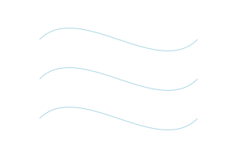
Rendering for different values of the ‘startOffset’ attribute. From top to bottom: default value, 50%, -50%.
The bottom path should show only "path." on the left side of the path. Chrome and Safari both do not handle offsets outside the range 0% to 100%. Chrome bug https://bugs.chromium.org/p/chromium/issues/detail?id=476554
For paths consisting of a single closed subpath (including an equivalent path for a basic shape), typographic characters are rendered along one complete circuit of the path. The text is aligned as determined by the text-anchor property to a position along the path set by the ‘startOffset’ attribute. For the start (end) value, the text is rendered from the start (end) of the line until the initial position along the path is reached again. For the middle, the text is rendered from the middle point in both directions until a point on the path equal distance in both directions from the initial position on the path is reached.
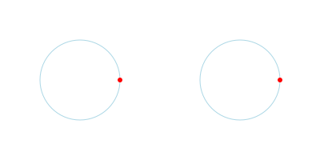
Rendering for text on a path referencing a ‘
circle’ with different values of the ‘startOffset’ attribute. Left: 0. Right: 75% or -25%. The red circle marks the beginning of the path (after the canonical decomposition of the circle into a path).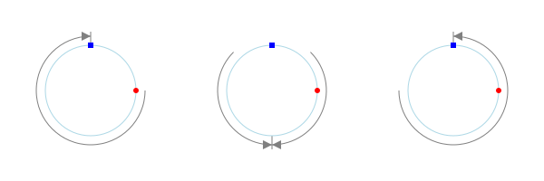
Rendering for text on a path referencing a ‘
circle’ with different values of the text-anchor attribute. Left: 'start'. Middle: 'middle'. Right: 'end'. The red circles marks the beginning of the path (after the canonical decomposition of the circle into a path). The blue square marks the reference point for the start of rendering (shifted from the path start by a ‘startOffset’ value of 75%). The gray arrow(s) shows the direction of typographic character placement and the point at which typographic character placement stops. The arrow(s) would be reversed if the direction property has a value of rtl.Rendering all glyphs was agreed to for basic shapes at the Sydney (2015) meeting (but missing in minutes). Limiting the wrapping to a path with a single closed sub-path and to one loop, effected by the 'startOffset' attribute agreed to at the London (2016) Editor’s Meeting.
- Value
- <length-percentage> | <number>
- initial value
- 0
- Animatable
- yes
- method
-
Indicates the method by which text should be rendered along the path.
A value of align indicates that the typographic character should be rendered using simple 2×3 matrix transformations such that there is no stretching/warping of the typographic characters. Typically, supplemental rotation, scaling and translation transformations are done for each typographic characters to be rendered. As a result, with align, in fonts where the typographic characters are designed to be connected (e.g., cursive fonts), the connections may not align properly when text is rendered along a path.
A value of stretch indicates that the typographic character outlines will be converted into paths, and then all end points and control points will be adjusted to be along the perpendicular vectors from the path, thereby stretching and possibly warping the glyphs. With this approach, connected typographic characters, such as in cursive scripts, will maintain their connections. (Non-vertical straight path segments should be converted to Bézier curves in such a way that horizontal straight paths have an (approximately) constant offset from the path along which the typographic characters are rendered.)
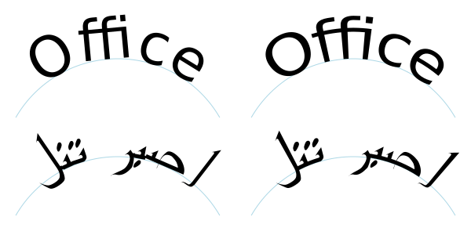
Rendering of text on a path for different ‘method’ values: Left: 'align'. Right: 'stretch'.
- Value
- align | stretch
- initial value
- align
- Animatable
- yes
- spacing
-
Indicates how the user agent should determine the spacing between typographic characters that are to be rendered along a path.
A value of exact indicates that the typographic characters should be rendered exactly according to the spacing rules as specified in Text on a path layout rules.
A value of auto indicates that the user agent should use text-on-a-path layout algorithms to adjust the spacing between typographic characters in order to achieve visually appealing results.
- Value
- auto | exact
- initial value
- exact
- Animatable
- yes
- side
-
Determines the side of the path the text is placed on (relative to the path direction). Specifying a value of right effectively reverses the path.
Rendering for text on a path referencing a ‘
circle’ with different values of the ‘side’ attribute. Left: left. Right: right.Added in SVG 2 to allow text either inside or outside closed subpaths and basic shapes (e.g. rectangles, circles, and ellipses).
Adding 'side' was resolved at the Sydney (2015) meeting.
- Value
- left | right
- initial value
- left
- Animatable
- yes
- path
-
A path data string describing the path onto which the typographic characters will be rendered. If the attribute is not specified, or if the path data results in no valid path segments (e.g., the value is an empty string or an error occurs before any valid path segments), the path specified with ‘href’ is used instead. If the path data contains an error but produces at least one valid path segment before the error, the valid portion of the path is used following the rules in Error handling in path data.
The ‘path’ attribute is animated in the same way as the d property, following the animation rules for path data.
- Value
- path data
- initial value
- (none)
- Animatable
- yes
- href
-
An URL reference to the ‘
path’ element or basic shape element onto which the glyphs will be rendered, if no ‘path’ attribute is provided. If the attribute is used, and the <url> is an invalid reference (e.g., no such element exists, or the referenced element is not a ‘path’ element) or basic shape, then the ‘textPath’ element is in error and its entire contents shall not be rendered by the user agent.Refer to the common handling defined for URL reference attributes and deprecated XLink attributes.
- Value
- URL [URL]
- initial value
- See above.
- Animatable
- yes
The path data coordinates within the referenced ‘path’
element or basic shape
element are assumed to be in the same coordinate system as the
current ‘text’ element, not in the coordinate system where
the ‘path’ element is defined. The transform
attribute on the referenced ‘path’ element or basic shape
element represents a
supplemental transformation relative to the current user
coordinate system for the current ‘text’ element, including
any adjustments to the current user coordinate system due to a
possible transform property on the current ‘text’
element. For example, the following fragment of SVG content:
<svg xmlns="http://www.w3.org/2000/svg"> <g transform="translate(25,25)"> <defs> <path id="path1" transform="scale(2)" d="M0,10 L40,20 80,10" fill="none" stroke="red"/> </defs> </g> <text transform="rotate(45)"> <textPath href="#path1">Text on a path</textPath> </text> </svg>
should have the same effect as the following:
<svg xmlns="http://www.w3.org/2000/svg"> <g transform="rotate(45)"> <defs> <path id="path1" transform="scale(2)" d="M0,10 L40,20 80,10" fill="none" stroke="red"/> </defs> <text> <textPath href="#path1">Text on a path</textPath> </text> </g> </svg>
and be equivalent to:
<svg xmlns="http://www.w3.org/2000/svg"> <text transform="rotate(45)"> <textPath path="M0,20 L80,40 160,20" >Text on a path</textPath> </text> </svg>
Note that the transform="translate(25,25)" has no effect on
the ‘textPath’ element, whereas the
transform="rotate(45)" applies to both
the ‘text’ and the use of the ‘path’ element as the
referenced shape for text on a path. Further note that
the transform="scale(2)"
scales the path (equivalent to multiplying every coordinate by 2 for simple linear paths),
but does not scale the text placed along the path.
Example toap01 provides a simple example of text on a path:
<?xml version="1.0" standalone="no"?>
<svg width="12cm" height="3.6cm" viewBox="0 0 1000 300" version="1.1"
xmlns="http://www.w3.org/2000/svg">
<defs>
<path id="MyPath"
d="M 100 200
C 200 100 300 0 400 100
C 500 200 600 300 700 200
C 800 100 900 100 900 100" />
</defs>
<desc>Example toap01 - simple text on a path</desc>
<use href="#MyPath" fill="none" stroke="red" />
<text font-family="Verdana" font-size="42.5" fill="blue" >
<textPath href="#MyPath">
We go up, then we go down, then up again
</textPath>
</text>
<!-- Show outline of viewport using 'rect' element -->
<rect x="1" y="1" width="998" height="298"
fill="none" stroke="blue" stroke-width="2" />
</svg>
Example toap01

Example toap02 shows
how ‘tspan’ elements can be included
within ‘textPath’ elements to adjust styling attributes and
adjust the current text position before rendering a particular
glyph. The first occurrence of the word "up" is filled with the
color red. Attribute ‘dy’ is used to lift the word
"up" from the baseline.
The ‘x’, ‘y’, ‘dx’,
‘dy’, and ‘rotate’ attributes can
only be specified on ‘text’ and ‘tspan’ elements
(but may effect the rendering of glyphs in text on a path —
see text on a path layout
rules).
<?xml version="1.0" standalone="no"?>
<svg width="12cm" height="3.6cm" viewBox="0 0 1000 300" version="1.1"
xmlns="http://www.w3.org/2000/svg">
<defs>
<path id="MyPath"
d="M 100 200
C 200 100 300 0 400 100
C 500 200 600 300 700 200
C 800 100 900 100 900 100" />
</defs>
<desc>Example toap02 - tspan within textPath</desc>
<use href="#MyPath" fill="none" stroke="red" />
<text font-family="Verdana" font-size="42.5" fill="blue" >
<textPath href="#MyPath">
We go
<tspan dy="-30" fill="red" >
up
</tspan>
<tspan dy="30">
,
</tspan>
then we go down, then up again
</textPath>
</text>
<!-- Show outline of viewport using 'rect' element -->
<rect x="1" y="1" width="998" height="298"
fill="none" stroke="blue" stroke-width="2" />
</svg>
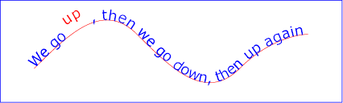
Example toap02

Example toap03 demonstrates the
use of the ‘startOffset’ attribute on the ‘textPath’
element to specify the start position of the text string as a
particular position along the path. Notice that glyphs that fall
off the end of the path are not rendered
(see text on a path layout
rules).
<?xml version="1.0" standalone="no"?>
<svg width="12cm" height="3.6cm" viewBox="0 0 1000 300" version="1.1"
xmlns="http://www.w3.org/2000/svg">
<defs>
<path id="MyPath"
d="M 100 200
C 200 100 300 0 400 100
C 500 200 600 300 700 200
C 800 100 900 100 900 100" />
</defs>
<desc>Example toap03 - text on a path with startOffset attribute</desc>
<use href="#MyPath" fill="none" stroke="red" />
<text font-family="Verdana" font-size="42.5" fill="blue" >
<textPath href="#MyPath" startOffset="80%">
We go up, then we go down, then up again
</textPath>
</text>
<!-- Show outline of viewport using 'rect' element -->
<rect x="1" y="1" width="998" height="298"
fill="none" stroke="blue" stroke-width="2" />
</svg>
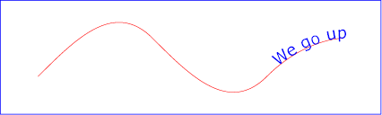
Example toap03

11.8.3. Text on a path layout rules
Conceptually, for text on a path the target path is stretched out into either a horizontal or vertical straight line segment. For horizontal text layout flows, the path is stretched out into a hypothetical horizontal line segment such that the start of the path is mapped to the left of the line segment. For vertical text layout flows, the path is stretched out into a hypothetical vertical line segment such that the start of the path is mapped to the top of the line segment. The standard text layout rules are applied to the hypothetical straight line segment and the result is mapped back onto the target path. Vertical and bidirectional text layout rules also apply to text on a path.
The orientation of each glyph along a path is determined individually.
For horizontal text layout flows, the default orientation (the up
direction) for a given glyph is along the vector that starts
at the intersection point on the path to which the glyph is
attached and which points in the direction 90 degrees
counter-clockwise from the angle of the curve at the intersection
point. For vertical text layout flows, the default orientation
for a given glyph is along the vector that starts at the intersection
point on the path to which the glyph is attached and which points
in the direction 180 degrees from the angle of the curve at the
intersection point.
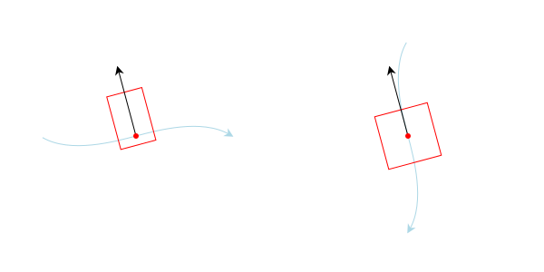
Default glyph orientation along a path. Left, horizontal text. Right: vertical text.
Example toap04 will be used to illustrate the particular layout rules for text on a path that supplement the basic text layout rules for straight line horizontal or vertical text.
<?xml version="1.0" standalone="no"?>
<svg width="12cm" height="3.6cm" viewBox="0 0 1000 300" version="1.1"
xmlns="http://www.w3.org/2000/svg">
<defs>
<path id="MyPath"
d="M 100 125
C 150 125 250 175 300 175
C 350 175 450 125 500 125
C 550 125 650 175 700 175
C 750 175 850 125 900 125" />
</defs>
<desc>Example toap04 - text on a path layout rules</desc>
<use href="#MyPath" fill="none" stroke="red" />
<text font-family="Verdana" font-size="60" fill="blue" letter-spacing="2" >
<textPath href="#MyPath">
Choose shame or get war
</textPath>
</text>
<!-- Show outline of viewport using 'rect' element -->
<rect x="1" y="1" width="998" height="298"
fill="none" stroke="blue" stroke-width="2" />
</svg>
Example toap04

The following picture does an initial zoom in on the first glyph
in the ‘text’ element.
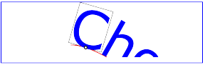
The small dot above shows the point at which the glyph is attached to the path. The box around the glyph shows the glyph is rotated such that its horizontal axis is parallel to the tangent of the curve at the point at which the glyph is attached to the path. The box also shows the glyph’s charwidth (i.e., the amount which the current text position advances horizontally when the glyph is drawn using horizontal text layout).
The next picture zooms in further to demonstrate the detailed layout rules.
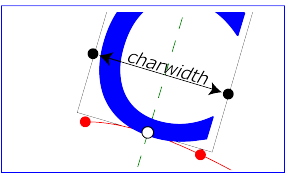
For left-to-right horizontal text layout along a path (i.e., when the glyph orientation is perpendicular to the inline-base direction the layout rules are as follows:
-
Determine the
startpoint-on-the-path for the
first glyph using attribute ‘startOffset’ and property
text-anchor. For text-anchor:start,
startpoint-on-the-path is the point on the path which represents
the point on the path which is ‘startOffset’ distance
along the path from the start of the path, calculated using the
user agent’s distance
along the path algorithm.
For text-anchor:middle,
startpoint-on-the-path is the point on the path which represents
the point on the path which is [ ‘startOffset’ minus half
of the total advance values for all of the glyphs in
the ‘
textPath’ element ] distance along the path from the start of the path, calculated using the user agent’s distance along the path algorithm. For text-anchor:end, startpoint-on-the-path is the point on the path which represents the point on the path which is [ ‘startOffset’ minus the total advance values for all of the glyphs in the ‘textPath’ element ]. Before rendering the first glyph, the horizontal component of the startpoint-on-the-path is adjusted to take into account various horizontal alignment text properties and attributes, such as a ‘dx’ attribute value on a ‘tspan’ element. (In the picture above, the startpoint-on-the-path is the leftmost dot on the path.) - Determine the glyph’s charwidth (i.e., the amount which the current text position advances horizontally when the glyph is drawn using horizontal text layout). (In the picture above, the charwidth is the distance between the two dots at the side of the box.)
- Determine the point on the curve which is charwidth distance along the path from the startpoint-on-the-path for this glyph, calculated using the user agent’s distance along the path algorithm. This point is the endpoint-on-the-path for the glyph. (In the picture above, the endpoint-on-the-path for the glyph is the rightmost dot on the path.)
- Determine the midpoint-on-the-path, which is the point on the path which is "halfway" (user agents can choose either a distance calculation or a parametric calculation) between the startpoint-on-the-path and the endpoint-on-the-path. (In the picture above, the midpoint-on-the-path is shown as a white dot.)
- Determine the glyph-midline, which is the vertical line in the glyph’s coordinate system that goes through the glyph’s x-axis midpoint. (In the picture above, the glyph-midline is shown as a dashed line.)
- Position the glyph such that the glyph-midline passes through the midpoint-on-the-path and is perpendicular to the line through the startpoint-on-the-path and the endpoint-on-the-path.
-
Align the glyph vertically relative to the midpoint-on-the-path
based on property alignment-baseline and any specified
values for attribute ‘
dy’ on a ‘tspan’ element. In the example above, the alignment-baseline property is unspecified, so the initial value of alignment-baseline:baseline will be used. There are no ‘tspan’ elements; thus, the baseline of the glyph is aligned to the midpoint-on-the-path. -
For each subsequent glyph, set a new startpoint-on-the-path as
the previous endpoint-on-the-path, but with appropriate
adjustments taking into account horizontal kerning tables in the
font and current values of various attributes and properties,
including spacing properties (e.g. letter-spacing
and word-spacing) and ‘
tspan’ elements with values provided for attributes ‘dx’ and ‘dy’. All adjustments are calculated as distance adjustments along the path, calculated using the user agent’s distance along the path algorithm. - Glyphs whose midpoint-on-the-path are off the path are not rendered.
- Continue rendering glyphs until there are no more glyphs (or no more space on path).
Comparable rules are used for top-to-bottom vertical text layout along a path (i.e., when the glyph orientation is parallel with the inline-base direction, the layout rules are as follows:
-
Determine the startpoint-on-the-path using the same method as
for horizontal text layout along a path, except that before
rendering the first glyph, the horizontal component of the
startpoint-on-the-path is adjusted to take into account various
vertical alignment text properties and attributes, such as
a ‘
dy’ attribute value on a ‘tspan’ element. - Determine the glyph’s charheight (i.e., the amount which the current text position advances vertically when the glyph is drawn using vertical text layout).
- Determine the point on the curve which is charheight distance along the path from the startpoint-on-the-path for this glyph, calculated using the user agent’s distance along the path algorithm. This point is the endpoint-on-the-path for the glyph.
- Determine the midpoint-on-the-path, which is the point on the path which is "halfway" (user agents can choose either a distance calculation or a parametric calculation) between the startpoint-on-the-path and the endpoint-on-the-path.
- Determine the glyph-midline, which is the horizontal line in the glyph’s coordinate system that goes through the glyph’s y-axis midpoint.
- Position the glyph such that the glyph-midline passes through the midpoint-on-the-path and is perpendicular to the line through the startpoint-on-the-path and the endpoint-on-the-path.
-
Align the glyph horizontally (where horizontal is relative to
the glyph’s coordinate system) relative to the
midpoint-on-the-path based on
property alignment-baseline and any specified values
for attribute ‘
dx’ on a ‘tspan’ element. -
For each subsequent glyph, set a new startpoint-on-the-path as
the previous endpoint-on-the-path, but with appropriate
adjustments taking into account vertical kerning tables in the
font and current values of various attributes and properties,
including spacing
properties and ‘
tspan’ elements with values provided for attributes ‘dx’ and ‘dy’. All adjustments are calculated as distance adjustments along the path, calculated using the user agent’s distance along the path algorithm. - Glyphs whose midpoint-on-the-path are off either end of an open subpath are not rendered.
- Continue rendering glyphs until there are no more glyphs.
In the calculations above, if either the startpoint-on-the-path or the endpoint-on-the-path is off the end of the path, then extend the path beyond its end points with a straight line that is parallel to the tangent at the path at its end point so that the midpoint-on-the-path can still be calculated.
When the inline-base direction
is horizontal, then any ‘x’
attributes on ‘text’ or ‘tspan’
elements represent new absolute offsets along
the path, thus providing explicit new values for
startpoint-on-the-path. Any ‘y’
attributes on ‘text’ or ‘tspan’
elements are ignored.
When the inline-base direction
is vertical, then any ‘y’
attributes on ‘text’ or ‘tspan’
elements represent new absolute offsets along
the path, thus providing explicit new values for
startpoint-on-the-path. Any ‘x’
attributes on ‘text’ or ‘tspan’ elements are ignored.
After positioning all characters within the ‘textPath’,
the current text position is set to the end point of the path,
after adjusting for the ‘startOffset’ in the case of paths
that are a single closed loop.
In other words,
text that follows a ‘textPath’ element (but is still inside
a ‘text’ element) that does not have explicit positioning
information (‘x’ and ‘y’ attributes) is
positioned from the end of the path.

The starting point for text after the ‘textPath’ element
without explicit positioning information is at the end of the
path (red dot).
The choice of the end of the path over the position of the last character was chosen as it is more author predictable (not depending on font, etc.) Decided at the London (2016) editor’s meeting. See also GitHub Issue 84.
11.9. Text rendering order
A ‘text’ element is rendered in one or more chunks.
Each chunk (as produced by the text layout algorithm)
is rendered, one after the other, in document order. Each
rendered chunk, which consists of one or more glyphs,
is filled and stroked as if it were a single path.
This means that all glyphs in the chunk should be filled, then all glyphs stroked at once, or the reverse according to the value of the paint-order property.
For the purposes of painting, a ‘text’ has zero, one, or more
equivalent paths, one for each chunk. Each equivalent path
consists of one subpath per glyph within that chunk.
Since the fill-rule property does not apply to SVG text elements, the specific order of the subpaths within the equivalent path does not matter.
The specific position of the start of each subpath, and the direction that the path progresses around glyph shape, is not defined. However, user agents should be consistent for a given font and glyph.
This means that dashed strokes on text may not place the dash pattern at the same positions across different implementations.
11.10. Properties and pseudo-elements
CSS offers a multitude of properties for styling text. In general, only two sets of properties are applicable to SVG: those that determine which glyphs are to be rendered (font-family, font-style, etc.) and those that apply at the paragraph level (direction, writing-mode, line-height, letter-spacing, etc.).
The list of CSS properties that must be supported on SVG text elements can be found in the Styling chapter.
- Properties that apply only to pre-formatted text and auto-wrapped text where the wrapping area is defined by the inline-size property:
- Properties that apply only to auto-wrapped text except for text where the wrapping area is defined by the inline-size property:
-
Properties that apply only to auto-wrapped text:
text-indent, line-break, word-break, hyphens, word-wrap, overflow-wrap.
Additionally, the @font-face rule must be supported for
font selection as well as
the ::first-line and ::first-letter pseudo-elements must be
supported on ‘text’ elements.
In interactive modes, the ::selection pseudo-element must also be supported.
Other CSS properties that affect text layout and rendering may also be supported by an SVG user agent; their effect should be taken into account as part of the CSS text layout step of the overall SVG text layout process.
For example, while SVG 2 does not require support for the text-combine-upright property, its behavior in an SVG context should be obvious.
A number of CSS properties must not have any effect on SVG text elements:
- Border properties (such as border-top-style). Boxes generated by the CSS layout process must not be sized as if they had any borders. The used value for all of the border-style component longhand properties on SVG text elements is none.
-
Display property values other than
none and
inline. Like all other SVG
elements, any value of display on an SVG text element
other than none is handled just
as if it were inline. Thus it
is not possible for a single ‘
text’ element to have any block children. - The float property, whose used value on SVG text elements is none.
- The position property, whose used value on SVG text elements is static.
- Margin properties (such as margin-top), whose used values on SVG text elements are 0.
- The text-align property when text is pre-formatted, whose used value on such SVG text elements is start.
- The content property, whose used value on SVG text elements is none.
Additionally, the ::before and ::after generated content pseudo-elements must not apply to SVG text elements.
A future specification may introduce support for the ::before and ::after generated content pseudo-elements; authors should not rely on them being ignored.
11.10.1. SVG properties
This section covers properties that are not covered elsewhere in this specification and that are specific to SVG.
11.10.1.1. Text alignment, the ‘text-anchor’ property
The text-anchor property is used to align (start-, middle- or end-alignment) a string of pre-formatted text or auto-wrapped text where the wrapping area is determined from the inline-size property relative to a given point. It is not applicable to other types of auto-wrapped text, see instead text-align. For multi-line text, the alignment takes place for each line.
The text-anchor property is applied to each individual
text chunk within a given ‘text’ element. Each text
chunk has an initial current text position, which
represents the point in the user coordinate system resulting from
(depending on context) application of the ‘x’
and ‘y’ attributes on the ‘text’ element,
any ‘x’ or ‘y’ attribute values on
a ‘tspan’ element assigned explicitly to the first rendered
character in a text chunk, or determination of the initial current
text position for a ‘textPath’ element. Each text chunk
also has a final current text position which is the
current text position after placing the last glyph
in the text chunk. The positions are determined before
applying the text-anchor property.
| Name: | text-anchor |
|---|---|
| Value: | start | middle | end |
| Initial: | start |
| Applies to: | text content elements |
| Inherited: | yes |
| Percentages: | N/A |
| Media: | visual |
| Computed value: | as specified |
| Animation type: | discrete |
Values have the following meanings:
- start
- The rendered characters are aligned such that the start of the resulting rendered text is at the initial current text position. For an element with a direction property value of "ltr" (typical for most European languages), the left side of the text is rendered at the initial text position. For an element with a direction property value of "rtl" (typical for Arabic and Hebrew), the right side of the text is rendered at the initial text position. For an element with a vertical primary text direction (often typical for Asian text), the top side of the text is rendered at the initial text position.
- middle
- The rendered characters are shifted such that the geometric middle of the resulting rendered text (determined from the initial and final current text position before applying the text-anchor property) is at the initial current text position.
- end
- The rendered characters are shifted such that the end of the resulting rendered text (final current text position before applying the text-anchor property) is at the initial current text position. For an element with a direction property value of "ltr" (typical for most European languages), the right side of the text is rendered at the initial text position. For an element with a direction property value of "rtl" (typical for Arabic and Hebrew), the left side of the text is rendered at the initial text position. For an element with a vertical primary text direction (often typical for Asian text), the bottom of the text is rendered at the initial text position.
An example of using text-anchor on multi-line text.
<svg xmlns="http://www.w3.org/2000/svg"
width="300" height="100" viewBox="0 0 300 100">
<text x="150" y="30" style="font: 20px sans-serif; white-space: pre-line;
text-anchor: middle;">
This multi-line text is
anchored to the middle.</text>
</svg>
The preserved line-feed creates two text chunks, each anchored independently.
Another example of using text-anchor on multi-line text.
<svg xmlns="http://www.w3.org/2000/svg"
width="200" height="150" viewBox="0 0 200 150">
<path d="m 100,0 0,150" style="fill:none;stroke:#add8e6"/>
<text x="100 100 100" y="50 95 140"
style="font-size: 42px; text-anchor: middle">I❤SVG</text>
</svg>
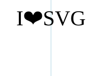
The text is divided into three text chunks (due to the
three coordinates in the ‘x’ and ‘y’
attributes). Each text chunk is independently anchored.
11.10.1.2. The ‘glyph-orientation-horizontal’ property
This property has been removed in SVG 2.
11.10.1.3. The ‘glyph-orientation-vertical’ property
This property applies only to vertical text. It has been obsoleted in SVG 2 and partially replaced by the text-orientation property of CSS Writing Modes Level 3. The following SVG 1.1 values must still be supported by aliasing the property as a shorthand to text-orientation as follows:
- 'auto' to 'mixed';
- '0deg', and '0', to 'upright'.
- '90deg', and '90', to 'sideways'.
Any other values must be treated as invalid.
11.10.1.4. The ‘kerning’ property
The ‘kerning’ property has been removed in SVG 2.
SVG 1.1 uses the 'kerning' property to determine if the font kerning tables should be used to adjust inter-glyph spacing. It also allows a <length> value which if given is added to the spacing between glyphs (supplemental to any from the letter-spacing property). This property is replaced in SVG 2 by the CSS font-kerning property which solely controls turning on/off the use of the font kerning tables.
Chrome’s UseCounter data showed a use of 0.01% in 2014. See GitHub issue 80.
11.10.2. SVG adaptions
This section covers CSS properties that are not covered elsewhere in this specification and have either SVG specific adaptions or are significantly altered from SVG 1.1.
| SVG 2 Requirement: | Reference CSS3 Fonts. |
|---|---|
| Resolution: | SVG 2 will depend on CSS3 Fonts. |
| Purpose: | Alignment with CSS 2.1 and CSS3 for Web font functionality, and to provide access to advanced typographic features of fonts. |
| Owner: | Chris (ACTION-3123) |
11.10.2.1. The ‘font-variant’ property
This section is not normativeThe font-variant property gets defined by the CSS Font Module ([css-font-3]).
CSS Font Module changes the meaning of the font-variant property from that defined by CSS 2.1. It has been repurposed (and its functionality greatly expanded) as a shorthand for selecting font variants from within a single font.
SVG 2 supports all font-variant longhand properties (e.g. font-variant-ligatures).
11.10.2.2. The ‘line-height’ property
SVG uses the line-height property to determine the amount of leading space which is added between lines in multi-line text (both for horizontal and vertical text). It is not applicable to text on a path.
Except for the additional information provided here, the normative definition of the line-height property is in the CSS 2.1 specification ([CSS2]).
The CSS Inline Module Level 3 may update the definition of 'line-height'.
11.10.2.3. The ‘writing-mode’ property
This section is not normative.The writing-mode property gets defined by the CSS Writing Modes Module ([css-writing-modes-3]).
This property sets the block-flow direction; or in-other-words, the direction in which lines of text are stacked. As a consequence it also determines if the text has a horizontal or vertical orientation.
SVG 2 references CSS Writing Modes Level 3 for the definition of the 'writing-mode' property. That specification introduces new values for the property. The SVG 1.1 values are obsolete but must still be supported by converting the specified values to computed values as follows:
In SVG 1.0, this property could be interpreted as to also setting the inline-base direction leading to confusion about its role relative to the direction property. SVG 1.1 was a bit more specific about the role of direction (e.g. that direction set the reference point for the text-anchor property) but still was open to interpretation. The fact that neither SVG 1.0 nor SVG 1.1 allowed multi-line text added to the confusion.
11.10.2.4. The ‘direction’ property
The property specifies the inline-base direction of a
‘text’ or ‘tspan’ element. It defines the
start
and end
points of a line of text as used by
the text-anchor and inline-size properties. It
also may affect the direction in which characters are positioned
if the unicode-bidi property’s value is either
embed or
bidi-override.
The direction property applies only to glyphs oriented perpendicular to the inline-base direction, which includes the usual case of horizontally-oriented Latin or Arabic text and the case of narrow-cell Latin or Arabic characters rotated 90 degrees clockwise relative to a top-to-bottom inline-base direction.
Reviewers, please take special care to ensure this agrees with CSS3 Writing modes.
Except for the additional information provided here, the normative definition of the direction property is in CSS Writing Modes Level 3 ([css-writing-modes-3]).
In many cases, the bidirectional algorithm from Unicode [UNICODE] produces the desired result automatically, and in such cases the author does not need to use these properties. For other cases, such as when using right-to-left languages, it may be sufficient to add the direction property to the outermost svg element, and allow that direction to inherit to all text elements, as in the following example (which may be used as a template):
<svg xmlns="http://www.w3.org/2000/svg"
width="100%" height="100%" viewBox="0 0 600 72"
direction="rtl" xml:lang="fa">
<title direction="ltr" xml:lang="en">Right-to-left Text</title>
<desc direction="ltr" xml:lang="en">
A simple example for using the 'direction' property in documents
that predominantly use right-to-left languages.
</desc>
<text x="300" y="50" text-anchor="middle" font-size="36">داستان SVG 1.1 SE طولا ني است.</text>
</svg>
Example

Below is another example, where implicit bidi reordering is not sufficient:
<?xml version="1.0" encoding="utf-8"?>
<svg xmlns="http://www.w3.org/2000/svg"
width="100%" height="100%" viewBox="0 0 600 72"
direction="rtl" xml:lang="he">
<title direction="ltr" xml:lang="en">Right-to-left Text</title>
<desc direction="ltr" xml:lang="en">
An example for using the 'direction' and 'unicode-bidi' properties
in documents that predominantly use right-to-left languages.
</desc>
<text x="300" y="50" text-anchor="middle" font-size="36"> כתובת MAC:‏
<tspan direction="ltr" unicode-bidi="embed">00-24-AF-2A-55-FC</tspan>
</text>
</svg>
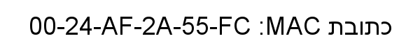
Example

11.10.2.5. The ‘dominant-baseline’ property
This property is defined in the CSS Line Layout Module 3 specification. See 'dominant-baseline'. [css-inline-3]
SVG 2 introduces some changes to the definition of this property. In particular:
- The 'reset-size' value is no longer supported. Any change in font-size resets the dominant baseline table.
- The 'use-script' and 'no-change' values are no longer supported.
- The property is now inherited. (Behavior is effectively unchanged.)
SVG uses the value of the dominant-baseline property to
align glyphs relative to the ‘x’ and ‘y’
attributes. For the text-orientation value
sideways, the
auto value for
dominant-baseline is
alphabetic; however, for backwards
compatibility, the glyphs should be aligned to the
‘x’ and ‘y’ attributes using the
value central.
We are interested in any actual use where one would prefer the old behavior.
11.10.2.6. The ‘alignment-baseline’ property
This property is defined in the CSS Line Layout Module 3 specification. See 'alignment-baseline'. [css-inline-3]
The vertical-align property shorthand should be preferred in new content.
SVG 2 introduces some changes to the definition of this property. In particular: the values 'auto', 'before-edge', and 'after-edge' have been removed. For backwards compatibility, 'text-before-edge' should be mapped to 'text-top' and 'text-after-edge' should be mapped to 'text-bottom'. Neither 'text-before-edge' nor 'text-after-edge' should be used with the vertical-align property.
11.10.2.7. The ‘baseline-shift’ property
This property is defined in the CSS Line Layout Module 3 specification. See 'baseline-shift'. [css-inline-3]
The vertical-align property shorthand should be preferred in new content.
The 'baseline' value was removed with the conversion of 'vertical-align' to a shorthand for 'alignment-baseline' and 'baseline-shift' as it is also a value for 'alignment-baseline' and it is redundant with a length value of '0'.
| SVG 2 Requirement: | Align with CSS for baseline alignment functionality. |
|---|---|
| Resolution: | SVG 2 will deprecate ‘baseline-shift’ and use ‘vertical-align’ instead. |
| Purpose: | To align with CSS. |
| Owner: | Cameron (ACTION-3281) |
'baseline-shift' is important for aligning subscripts and superscripts (Inkscape relies on it for this purpose). It remains in the CSS Inline Layout Module Level 3. 'vertical-align' is a shorthand for changing multiple properties at once, including 'baseline-shift'.
11.10.2.8. The ‘letter-spacing’ property
Except as noted, see CSS Text Level 3 for the definition of the letter-spacing.([css-text-3]).
SVG 1.1 allowed percentage values in the letter-spacing property. Percentage values based on the SVG viewport are not seen as useful, so this was removed in SVG 2. This brings the definition of 'letter-spacing' in line with CSS.
11.10.2.9. The ‘word-spacing’ property
Except as noted, see CSS Text Level 3 for the definition of the word-spacing.([css-text-3]).
SVG 2 changes the meaning of percentage values for the word-spacing property. In SVG 1.1, percentages define additional spacing as a percentage of the SVG viewport size. Percentage values based on the SVG viewport are not seen as useful. In SVG 2, following CSS Text Level 3, percentages define additional spacing as a percentage of the affected character’s width. This brings the definition of 'word-spacing' in line with CSS.
11.10.2.10. The ‘text-overflow’ property
| SVG 2 Requirement: | Add text-overflow functionality. |
|---|---|
| Resolution: | We will add text-overflow in SVG 2. |
| Purpose: | To align with CSS, allow indicating that not all text is shown. |
| Owner: | Erik (ACTION-3003) |
New in SVG 2. Added to allow user agents to handle text strings that overflow a predefined wrapping area in a more useful way. Aligns SVG and HTML/CSS text processing.
See the CSS3 Overflow specification for the definition of 'text-overflow'. [css-overflow-3]
SVG uses the text-overflow property to control how text content block elements render when text overflows line boxes as, for example, can happen when the white-space property has the value nowrap. The property does not apply to pre-formatted text or text-on-a-path.
In SVG text-overflow has an effect if there is a validly specified wrapping area, regardless of the computed value of the overflow property on the text content block element.
If the text-overflow property has the value ellipsis then if the text that is to be rendered overflows the wrapping area an ellipsis is rendered such that it fits within the given area. For the purposes of rendering, the ellipsis is treated as if it replaced the characters at the point where it is inserted.
If the text-overflow property has the value clip then any text that overflows the wrapping area is clipped. Characters may be partially rendered.
Any other value for text-overflow is treated as if it wasn’t specified.
Note that the effect of text-overflow is purely visual, the ellipsis itself does not become part of the DOM. For all the DOM methods it is as if text-overflow was not applied, and as if the wrapping area did not constrain the text.
The following example shows the use of text-overflow. The top line shows text as it would normally be rendered (text overflows due to white-space value pre and is displayed due to overflow value visible). The middle line shows text with text-overflow value clip, and the bottom line shows text with text-overflow value ellipsis.
<svg xmlns="http://www.w3.org/2000/svg"
width="300" height="150" viewBox="0 0 300 150">
<style>
text { font: 25px sans-serif; white-space: pre; }
path { fill: none; stroke: #add8e6; }
</style>
<path d="m 50,0 0,150"/>
<path d="m 200,0 0,150"/>
<text x="50" y="35" inline-size="100" style="overflow:visible">SVG is awesome</text>
<text x="50" y="85" inline-size="100" style="text-overflow:clip">SVG is awesome</text>
<text x="50" y="135" inline-size="100" style="text-overflow:ellipsis">SVG is awesome</text>
</svg>
The text-overflow property used on text elements, the bottom line showing text with an ellipsis applied.
It has been argued that this property is useless. It would be of more use if coupled with a mechanism that would expose the hidden text (tool-tip on hovering over ellipses?). The text-overflow property only deals with text that overflows off the end of a line. It does not deal with text that overflows the off the end of the wrapping area.
11.10.3. White space
New in SVG 2. Added white-space to allow a more useful
way to control white-space handling. Aligns SVG and HTML/CSS text
processing. ‘xml:space’ deprecated in new content, retained
for backwards compatibility.
11.10.3.1. SVG 2 Preferred white space handling, the ‘white-space’ property
Rendering of white space in SVG 2 is controlled by the white-space property. This specifies two things:
- whether and how white space inside the element is collapsed
- whether lines may wrap at unforced soft wrap opportunities
Values and their meanings are defined in CSS Text Module Level 3.[css-text-3]
An example of using the white-space value pre-line.
<svg xmlns="http://www.w3.org/2000/svg">
width="200" height="200" viewBox="0 0 200 200">
<text x="150" y="30" style="font: 20px IPAMincho; writing-mode: vertical-rl;
white-space: pre-line;">
千利奴流乎和加
餘多連曽津祢那
良牟有為能於久
耶万計不己衣天
阿佐伎喩女美之
恵比毛勢須</text>
</svg>
Example of multi-line vertical text with line breaks. The text is from the Japanese poem Iroha. The lines are broken at traditional places.
11.10.3.2. Legacy white-space handling, the ‘xml:space’ property
For compatibility, SVG 2 also supports the XML attribute
‘xml:space’ to specify the handling of white space
characters within a given ‘text’ element’s character
data. New content should not use ‘xml:space’ but
instead, use the white-space property.
This section should be simplified to limit the discussion of xml:space and instead define it in the user agent style sheet using the white-space property. The CSS Text 4 specification’s preserve-spaces value for the 'white-space-collapse' property is intended to match xml:space=preserve. (fantasai agreed to add an appropriate value for white-space to match SVG 1.1’s odd xml:space="preserve" behavior.)
Note that any child element of a ‘text’ element may also
have an ‘xml:space’ attribute which will apply to that
child element’s text content. The SVG user agent has special
processing rules associated with this attribute as described
below. These are behaviors that occur subsequent to XML parsing
[XML]
and any construction of a DOM.
‘xml:space’ is an inheritable attribute which can have one of
two values:
- 'default'
-
(The initial/default value for ‘
xml:space’.) When xml:space="default", the SVG user agent will do the following using a copy of the original character data content. First, it will remove all newline characters. Then it will convert all tab characters into space characters. Then, it will strip off all leading and trailing space characters. Then, all contiguous space characters will be consolidated. - 'preserve'
-
When xml:space="preserve", the
SVG user agent will do the following using a copy of the
original character data content. It will convert all newline and
tab characters into space characters. Then, it will draw all
space characters, including leading, trailing and multiple
contiguous space characters. Thus, when drawn with
xml:space="preserve", the string
"a b"(three spaces between "a" and "b") will produce a larger separation between "a" and "b" than"a b"(one space between "a" and "b").
The following example illustrates that line indentation can be
important when using
xml:space="default". The fragment
below show two pairs of similar ‘text’ elements, with
both ‘text’ elements using
xml:space="default". For
these examples, there is no extra white space at the end of any of
the lines (i.e., the line break occurs immediately after the last
visible character).
[01] <text xml:space='default'> [02] WS example [03] indented lines [04] </text> [05] <text xml:space='preserve'>WS example indented lines</text> [06] [07] <text xml:space='default'> [08]WS example [09]non-indented lines [10] </text> [11] <text xml:space='preserve'>WS examplenon-indented lines</text>
The first pair of ‘text’ elements above show the
effect of indented character data. The attribute
xml:space="default" in the first
‘text’ element instructs the user agent to:
- convert all tabs (if any) to space characters,
- strip out all line breaks (i.e., strip out the line breaks at the end of lines [01], [02] and [03]),
- strip out all leading space characters (i.e., strip out space characters before "WS example" on line [02]),
- strip out all trailing space characters (i.e., strip out space characters before "</text>" on line [04]),
- consolidate all intermediate space characters (i.e., the space characters before "indented lines" on line [03]) into a single space character.
The second pair of ‘text’ elements above show the
effect of non-indented character data. The attribute
xml:space="default" in the third
‘text’ element instructs the user agent to:
- convert all tabs (if any) to space characters,
- strip out all line breaks (i.e., strip out the line breaks at the end of lines [07], [08] and [09]),
- strip out all leading space characters (there are no leading space characters in this example),
- strip out all trailing space characters (i.e., strip out space characters before "</text>" on line [10]),
- consolidate all intermediate space characters into a single space character (in this example, there are no intermediate space characters).
Note that XML parsers are required to convert the standard representations for a newline indicator (e.g., the literal two-character sequence "U+000D U+000A", CARRIAGE-RETURN LINE-FEED or the stand-alone literals U+000D or U+000A) into the single character U+000A before passing character data to the application. Thus, each newline in SVG will be represented by the single character U+000A, no matter what representation for newlines might have been used in the original resource. (See XML end-of-line handling.)
Any features in the SVG language or the SVG DOM that are based
on character position number, such as the ‘x’,
‘y’, ‘dx’, ‘dy’ and
‘rotate’ attributes on the ‘text’ and ‘tspan’
elements, are based on
character position after applying the white space handling rules
described here. In particular,
if xml:space="default", it is
often the case that white space characters are removed as part of
processing. Character position numbers index into the text string
after the white space characters have been removed per the rules
in this section.
Note that a glyph corresponding to a white-space character should only be displayed as a visible but blank space, even if the glyph itself happens to be non-blank. See display of unsupported characters [UNICODE].
The ‘xml:space’ attribute is:
Animatable: no.
11.10.3.3. Duplicate white-space directives
Older, SVG 1.1 content will use ‘xml:space’. New content,
and older content that is being reworked, will use
white-space and remove any existing
‘xml:space’. However, user agents may come across content
which uses both methods on the same element. If
the white-space property is set on any element, then the
value of ‘xml:space’ is ignored.
11.11. Text decoration
Text in SVG can be decorated with an underline, overline, and/or strike-through. The position and style of the decoration is determined respectively by the text-decoration-line and text-decoration-style properties, or by the text-decoration shorthand property as defined in the Line Decoration section of the CSS Text Decoration Module Level 3 [(css-text-decor-3)] specification.
The fill and stroke of the text decoration are given by the fill and stroke of the text at the point where the text decoration is declared (see example below).
The text-decoration-line and text-decoration-style properties are new in SVG 2. The SVG 1.1/CSS 2.1 text-decoration property is transformed in a backwards compatible way to a short hand for these properties.
The order in which the text and decorations are drawn is defined by the Painting Order of Text Decorations section of CSS Text Decoration Module Level 3. The paint order of the text decoration itself (fill/stroke) is determined by the value of the paint-order property at the point where the text decoration is declared.
Example textdecoration01 provides
examples for text-decoration. The first line of text has
no value for text-decoration, so the initial value
of text-decoration:none is
used. The second line shows
text-decoration:line-through. The
third line shows
text-decoration:underline. The
fourth line illustrates the rule whereby decorations are rendered
using the same fill and stroke properties as are present on the
element for which the text-decoration is specified. Since
text-decoration is specified on the ‘text’
element, all text within the ‘text’ element has its
underline rendered with the same fill and stroke properties as
exist on the ‘text’ element (i.e., blue fill, red stroke),
even though the various words have different fill and stroke
property values. However, the word "different" explicitly
specifies a value for text-decoration; thus, its
underline is rendered using the fill and stroke properties as
the ‘tspan’ element that surrounds the word "different"
(i.e., yellow fill, darkgreen stroke):
<?xml version="1.0" standalone="no"?>
<svg width="12cm" height="4cm" viewBox="0 0 1200 400"
xmlns="http://www.w3.org/2000/svg" version="1.1">
<desc>Example textdecoration01 - behavior of 'text-decoration' property</desc>
<rect x="1" y="1" width="1198" height="398" fill="none" stroke="blue" stroke-width="2" />
<g font-size="60" fill="blue" stroke="red" stroke-width="1" >
<text x="100" y="75">Normal text</text>
<text x="100" y="165" text-decoration="line-through" >Text with line-through</text>
<text x="100" y="255" text-decoration="underline" >Underlined text</text>
<text x="100" y="345" text-decoration="underline" >
<tspan>One </tspan>
<tspan fill="yellow" stroke="purple" >word </tspan>
<tspan fill="yellow" stroke="black" >has </tspan>
<tspan fill="yellow" stroke="darkgreen" text-decoration="underline" >different </tspan>
<tspan fill="yellow" stroke="blue" >underlining</tspan>
</text>
</g>
</svg>
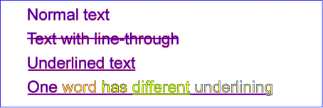
Example textdecoration01

11.12. Text selection and clipboard operations
Conforming SVG viewers on systems which have the capacity for text selection (e.g., systems which are equipped with a pointer device such as a mouse) and which have system clipboards for copy/paste operations are required to support:
- user selection of text strings in SVG content
- the ability to copy selected text strings to the system clipboard
A text selection operation starts when all of the following occur:
-
the user positions the pointing device over a glyph that has
been rendered as part of a ‘
text’ element, initiates a select operation (e.g., pressing the standard system mouse button for select operations) and then moves the pointing device while continuing the select operation (e.g., continuing to press the standard system mouse button for select operations) - no other visible graphics element has been painted above the glyph at the point at which the pointing device was clicked
-
no links or
events have been
assigned to the ‘
text’, ‘tspan’ or ‘textPath’ element(s) (or their ancestors) associated with the given glyph.
As the text selection operation proceeds (e.g., the user continues
to press the given mouse button), all associated events with other
graphics elements are ignored (i.e., the text selection operation
is modal) and the SVG user agent shall dynamically indicate which
characters are selected by applying styles for the ::selection pseudo-class.
As the
pointer is moved during the text selection process, the end glyph
for the text selection operation is the glyph within the
same ‘text’ element whose glyph cell is closest to the
pointer. All characters within the ‘text’ element whose
position within the ‘text’ element is between the start of
selection and end of selection shall be highlighted, regardless of
position on the canvas and regardless of any graphics elements
that might be above the end of selection point.
Once the text selection operation ends (e.g., the user releases the given mouse button), the selected text will stay highlighted until an event occurs which cancels text selection, such as a pointer device activation event (e.g., pressing a mouse button).
Detailed rules for determining which characters to highlight during a text selection operation are provided in Text selection implementation notes.
For systems which have system clipboards, the SVG user agent is required to provide a user interface for initiating a copy of the currently selected text to the system clipboard. It is sufficient for the SVG user agent to post the selected text string in the system’s appropriate clipboard format for plain text, but it is preferable if the SVG user agent also posts a rich text alternative which captures the various font properties associated with the given text string.
For bidirectional text, the user agent must support text selection in logical order, which will result in discontinuous highlighting of glyphs due to the bidirectional reordering of characters. User agents can provide an alternative ability to select bidirectional text in visual rendering order (i.e., after bidirectional text layout algorithms have been applied), with the result that selected character data might be discontinuous logically. In this case, if the user requests that bidirectional text be copied to the clipboard, then the user agent is required to make appropriate adjustments to copy only the visually selected characters to the clipboard.
SVG authors and SVG generators should order their text strings to facilitate properly ordered text selection within SVG viewing applications such as Web browsers; in other words, the DOM order of the text should match the natural reading order of the text.
11.12.1. Text selection implementation notes
The following implementation notes describe the algorithm for deciding which characters are selected during a text selection operation.
As the text selection operation occurs (e.g., while the user clicks and drags the mouse to identify the selection), the user agent determines a start selection position and an end selection position, each of which represents a position in the text string between two characters. After determining start selection position and end selection position, the user agent selects the appropriate characters, where the resulting text selection consists of either:
- no selection or
- a start character, an end character
(possibly the same character), and all of the characters
within the same ‘
text’ element whose position in the DOM is logically between the start character and end character.
On systems with pointer devices, to determine the start selection position, the SVG user agent determines which boundary between characters corresponding to rendered glyphs is the best target (e.g., closest) based on the current pointer location at the time of the event that initiates the selection operation (e.g., the mouse down event). The user agent then tracks the completion of the selection operation (e.g., the mouse drag, followed ultimately by the mouse up). At the end of the selection operation, the user agent determines which boundary between characters is the best target (e.g., closest) for the end selection position.
If no character reordering has occurred due to bidirectionality,
then the selection consists of all characters between the
start selection position and end selection
position. For example, if a ‘text’ element contains the
string "abcdef" and the start selection position and end
selection positions are 0 and 3 respectively (assuming the left
side of the "a" is position zero), then the selection will
consist of "abc".
When the user agent is implementing selection of bidirectional text, and when the selection starts (or ends) between characters which are not contiguous in logical order, then there might be multiple potential combinations of characters that can be considered part of the selection. The algorithms to choose among the combinations of potential selection options shall choose the selection option which most closely matches the text string’s visual rendering order.
When multiple characters map inseparably to a given set of one or more glyphs, the user agent can either disallow the selection to start in the middle of the glyph set or can attempt to allocate portions of the area taken up by the glyph set to the characters that correspond to the glyph.
For systems which support pointer devices such as a mouse, the user agent is required to provide a mechanism for selecting text even when the given text has associated event handlers or links, which might block text selection due to event processing precedence rules (see Pointer events). One implementation option: For platforms which support a pointer device such as a mouse, the user agent may provide for a small additional region around character cells which initiates text selection operations but does not initiate event handlers or links.
11.13. DOM interfaces
| SVG 2 Requirement: | Have a DOM method to convert a ‘text’ element to outline path data.
|
|---|---|
| Resolution: | We will add a DOM method to convert a ‘text’ element to outline path data, possibly moving the functionality to the FXTF. |
| Purpose: | To allow manipulation of text as a path. |
| Owner: | Cameron (ACTION-3076) |
| Status: | Future wish list |
11.13.1. Interface SVGTextContentElement
The SVGTextContentElement interface is implemented by elements
that support rendering child text content.
For the methods on this interface that refer to an index to a
character or a number of characters, these references are to be
interpreted as an index to a UTF-16 code unit or a number of
UTF-16 code units, respectively. This is for consistency with DOM
Level 2 Core, where methods on the CharacterData interface
use UTF-16 code units as indexes and counts within the character
data. Thus for example, if the text content of a ‘text’
element is a single non-BMP character, such as U+10000, then
invoking getNumberOfChars on that
element will return 2 since there are two UTF-16 code units (the
surrogate pair) used to represent that one character.
[Exposed =Window ]interface :SVGTextContentElement SVGGraphicsElement { // lengthAdjust Typesconst unsigned short LENGTHADJUST_UNKNOWN = 0;const unsigned short LENGTHADJUST_SPACING = 1;const unsigned short LENGTHADJUST_SPACINGANDGLYPHS = 2; [SameObject ]readonly attribute SVGAnimatedLength textLength ; [SameObject ]readonly attribute SVGAnimatedEnumeration lengthAdjust ;long getNumberOfChars ();float getComputedTextLength ();float getSubStringLength (unsigned long ,charnum unsigned long );nchars SVGPoint getStartPositionOfChar (unsigned long );charnum SVGPoint getEndPositionOfChar (unsigned long );charnum SVGRect getExtentOfChar (unsigned long );charnum float getRotationOfChar (unsigned long );charnum long getCharNumAtPosition (optional DOMPointInit = {});point undefined selectSubString (unsigned long ,charnum unsigned long ); };nchars
The numeric length adjustment type constants defined on SVGTextContentElement
are used to represent the keyword values that the ‘lengthAdjust’ attribute
can take. Their meanings are as follows:
| Constant | Meaning |
|---|---|
| The spacing keyword. |
| The spacingAndGlyphs keyword. |
| Some other value. |
The textLengthtextLength’ content attribute.
The initial value of the ‘textLength’ content attribute
is defined to equal the user-agent’s calculated length for the element.
In other words, when the content attribute is not present,
the IDL property is initialized with a base length equal to
the return-value of getComputedTextLength
on the same element, as a length in user units.
The lengthAdjustlengthAdjust’ content attribute. The numeric type values
for ‘lengthAdjust’ are as described above in the numeric length adjust type
constant table.
The getNumberOfChars
- Let node be the element or node upon which this method was called
- If node is a DOM text node, return the length of the text content of node, after normalizing whitespace according to the value of the white-space property on its parent element.
-
If node is an Element:
- If the element is not rendered (e.g., because the display property has the used value none), then return 0;
-
Otherwise, set count to 0, and for each child of node:
- Recursively call this algorithm and add the returned value to count.
- For all other node types (e.g., DOM comments), return 0.
The getComputedTextLength
- Let count be the value that would be returned if
the
getNumberOfCharsmethod were called on this element. - Let length be the value that would be returned
if the
getSubStringLengthmethod were called on this element, passing 0 and count as arguments. - Return length.
The getSubStringLength
- Assign an index to each addressable character in the DOM within this element, where the first character has index 0.
- If charnum is greater than the highest index assigned to a character or if nchars is negative, then throw an IndexSizeError.
- Let length be a length in user units, initialized to 0.
-
For each addressable character in the DOM within this element that has an
index such that
charnum ≤ index < (charnum + nchars):
-
If the character corresponds to a typographic character and it is the first character
in document order to correspond to that typographic character, then:
- Add the advance of the typographic character to length, adjusted for any font kerning in effect.
- If the letter-spacing or word-spacing properties contributed space just after the typographic character, then add that space to length.
This means that, for example, if there is a ligature that is only partly included in the substring, then the advance of the typographic character and any subsequent letter-spacing or word-spacing space will be assigned to the first character’s text length.
-
If the character corresponds to a typographic character and it is the first character
in document order to correspond to that typographic character, then:
- Return length.
Previous versions of SVG required that this method
and getComputedTextLength
also include
positioning adjustments in the inline direction due to
‘dx’ or ‘dy’ on child elements,
so that the returned value would be equivalent to
the user agent’s calculation for ‘textLength’.
However, it was poorly specified,
poorly implemented,
and of dubious benefit,
so has been simplified to match implementations.
Change to text length methods resolved at August 2015 Paris face-to-face.
To find the typographic character for a character at index index within an element element, the following steps are run:
- Assign an index to each addressable character in the DOM within this element, where the first character has index 0.
- Let last be the highest index assigned to a character.
-
While charnum < last and
the character at index charnum does not correspond to
a typographic character:
- Set charnum to charnum + 1.
- If charnum is greater than the highest index assigned to a character or, then return null.
- Otherwise, return the typographic character that corresponds to charnum.
The getStartPositionOfChar
- Let cluster be the result of finding the typographic character for the character at index charnum within the current element.
- If cluster is null, then throw an IndexSizeError.
- Let p be the alignment point of the typographic character that correspond to the character at index charnum, in the coordinate system of the current element.
- Return a newly created, detached SVGPoint object representing the point p.
The getEndPositionOfChar
- Let cluster be the result of finding the typographic character for the character at index charnum within the current element.
- If cluster is null, then throw an IndexSizeError.
- Let p be the alignment point of cluster that correspond to the character at index charnum, in the coordinate system of the current element.
- Let direction be a unit vector in the direction of
the cluster’s advance. This direction takes into account
the writing mode being used, the direction of the character,
the text-orientation, glyph-orientation-horizontal
and glyph-orientation-vertical properties,
any ‘
rotate’ value that applies to cluster, and any rotation applied to due a ‘textPath’. - Let advance be cluster’s advance.
- Set p to p + advance · direction.
- Return a newly created, detached SVGPoint object representing the point p.
The getExtentOfChar
- Let cluster be the result of finding the typographic character for the character at index charnum within the current element.
- If cluster is null, then throw an IndexSizeError.
- Let quad be the potentially rotated rectangle in the current element’s coordinate system that is the glyph cell for cluster.
- Let rect be the rectangle that forms the tightest bounding box around quad in the current element’s coordinate system.
- Return a newly created SVGRect object representing the rectangle rect.
The getRotationOfChar
- Let cluster be the result of finding the typographic character for the character at index charnum within the current element.
- If cluster is null, then throw an IndexSizeError.
- Let direction be the angle in degrees that represents
the direction of the cluster’s advance.
This direction takes into account
the writing mode being used, the direction of the character,
the text-orientation, glyph-orientation-horizontal
and glyph-orientation-vertical properties,
any ‘
rotate’ value that applies to cluster, and any rotation applied to due a ‘textPath’. - Return direction.
The getCharNumAtPosition
- Assign an index to each character in the DOM within this element, where the first character has index 0.
- Let last be the highest index assigned to a character.
- Let charnum be 0.
- Let result be -1.
-
While charnum < last:
- If the character at index charnum corresponds to a typographic character and it is the first character in document order to correspond to that typographic character, and point in this element’s coordinate system is within the glyph cell for the typographic character, then set result to charnum.
- Return result.
The selectSubString
Selects a substring of the text in this element, beginning at character index charnum and extending forwards nchars characters. The following steps must be followed when this method is called:
- Let node be this text content element.
- Let count be the number of characters in this text content element.
- Let end = charnum + nchars.
- If charnum ≥ count or end ≥ count, then throw an IndexSizeError.
- Remove all ranges from the document’s selection. [DOM][EDITING]
- Set the selection’s direction to forwards.
- Add to the selection a new range whose start is the boundary point tuple (node, charnum) and end is the boundary point tuple (node, end).
Ignoring the argument checking and exception throwing, this is equivalent to performing the following:
var selection = document.getSelection(); selection.removeAllRanges(); var range = new Range(); range.setStart(textContentElement, charnum); range.setEnd(textContentElement, charnum + nchars); selection.addRange(range);
This method is deprecated, as it duplicates functionality from the Selection API.
11.13.2. Interface SVGTextPositioningElement
The SVGTextPositioningElement interface is implemented by elements
that support attributes that position individual text glyphs. It is inherited by
SVGTextElement and SVGTSpanElement.
[Exposed =Window ]interface :SVGTextPositioningElement SVGTextContentElement { [SameObject ]readonly attribute SVGAnimatedLengthList x ; [SameObject ]readonly attribute SVGAnimatedLengthList y ; [SameObject ]readonly attribute SVGAnimatedLengthList dx ; [SameObject ]readonly attribute SVGAnimatedLengthList dy ; [SameObject ]readonly attribute SVGAnimatedNumberList rotate ; };
The
xydxdyrotatex’, ‘y’,
‘dx’, ‘dy’ and ‘rotate’
content attributes, respectively.
11.13.3. Interface SVGTextElement
An SVGTextElement object represents a ‘text’ element in the DOM.
[Exposed =Window ]interface :SVGTextElement SVGTextPositioningElement { };
11.13.4. Interface SVGTSpanElement
An SVGTSpanElement object represents a ‘tspan’ element in the DOM.
[Exposed =Window ]interface :SVGTSpanElement SVGTextPositioningElement { };
11.13.5. Interface SVGTextPathElement
An SVGTextPathElement object represents a ‘textPath’ element in the DOM.
[Exposed =Window ]interface :SVGTextPathElement SVGTextContentElement { // textPath Method Typesconst unsigned short TEXTPATH_METHODTYPE_UNKNOWN = 0;const unsigned short TEXTPATH_METHODTYPE_ALIGN = 1;const unsigned short TEXTPATH_METHODTYPE_STRETCH = 2; // textPath Spacing Typesconst unsigned short TEXTPATH_SPACINGTYPE_UNKNOWN = 0;const unsigned short TEXTPATH_SPACINGTYPE_AUTO = 1;const unsigned short TEXTPATH_SPACINGTYPE_EXACT = 2; // textPath Side Typesconst unsigned short TEXTPATH_SIDETYPE_UNKNOWN = 0;const unsigned short TEXTPATH_SIDETYPE_LEFT = 1;const unsigned short TEXTPATH_SIDETYPE_RIGHT = 2; [SameObject ]readonly attribute SVGAnimatedLength startOffset ; [SameObject ]readonly attribute SVGAnimatedEnumeration method ; [SameObject ]readonly attribute SVGAnimatedEnumeration spacing ; [SameObject ]readonly attribute SVGAnimatedEnumeration side ; };SVGTextPathElement includes SVGURIReference ;
The numeric method type constants defined on SVGTextPathElement
are used to represent the keyword values that the ‘method’
attribute can take. Their meanings are as follows:
| Constant | Meaning |
|---|---|
| The align keyword. |
| The stretch keyword. |
| Some other value. |
The numeric spacing type constants defined on SVGTextPathElement
are used to represent the keyword values that the ‘spacing’
attribute can take. Their meanings are as follows:
| Constant | Meaning |
|---|---|
| The auto keyword. |
| The exact keyword. |
| Some other value. |
The numeric side type constants defined on SVGTextPathElement
are used to represent the keyword values that the ‘side’
attribute can take. Their meanings are as follows:
| Constant | Meaning |
|---|---|
| The left keyword. |
| The right keyword. |
| Some other value. |
The startOffset
The method
The spacing
The side